Chap5 translated
6 Data Link
6 数据链路层
本规范章节定义了 UALink 协议的数据链路层，该层位于事务层与物理层之间。其主要功能是在发送时将 64 字节的事务层（TL）微片打包为 640 字节的数据链路（DL）微片，并在接收时进行解包。数据链路层提供带内消息服务用于链路管理，支持诸如通告 TL 时钟速率、查询设备与端口 ID、协商通道状态等功能。其中包含一个 UART 风格的机制用于固件通信，并采用基于信用的流量控制以防止缓冲区溢出。为支持降低内部时钟频率的节能加速器，定义了发送端调速机制以避免接收端 FIFO 溢出。
链路的可靠性通过重放协议来保证：每个 DL 净荷微片均携带一个序列号和一个 32 位 CRC。接收端对正确接收的微片进行确认；若发生 CRC 错误或序列号乱序，则发出重放请求。发送端维护重放缓冲区以重传未被确认的微片。微片头部区分显式序列号微片和携带 ACK 或重放请求的命令微片。利用超时计数器监控前向进度，并通过丢弃损坏的微片并将链路转换到安全状态来遏制错误。
数据链路层的链路状态机包括 Fault、Idle、NOP 和 Up 状态，其状态转换由物理层故障、接收到的控制微片或重放超时驱动。总体而言，数据链路层在提供边带通信和速率适配的同时，确保 TL 流量的有序、无损传递，构成了 UALink 互联的可靠传输核心。
6.1 Overview
The Block diagram is shown below. The Data Link sits between the Transaction layer and the Physical Layer. The Data Link packs 64-byte Flits from the transaction layer into 640 Bytes Flits for the Physical Layer. The Data Link also provides a message service between link partners that originates and terminates at the Data Link layer. The message service is used for advertising the Transaction Layer rate, querying device and port ID on connected Link Partner, and other functions. The message service also provides for a UART style communication between link partners, intended for F/W communications. Link level replay is provided on a 640 Byte Flit basis. A 32-bit CRC is computed and checked and is part of the 640 Byte Flit.
框图如下所示。数据链路层位于事务层与物理层之间。数据链路层将来自事务层的64字节微片打包为640字节微片，供物理层使用。数据链路层还在链路伙伴之间提供一种消息服务，该服务起始并终止于数据链路层。此消息服务用于通告事务层速率、查询所连接链路伙伴上的设备及端口ID，以及其他功能。该消息服务还为链路伙伴间提供一种UART（通用异步收发器）式通信，旨在用于固件通信。链路级重放以640字节微片为基础实施。计算并校验32位CRC，且CRC是640字节微片的组成部分。
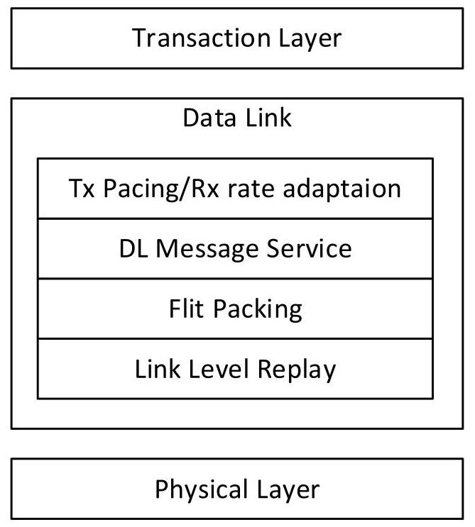
Figure 6-1 DL block Diagram
图6-1 DL 框图
6.2 Data Link Features
6.2.1 Packing Flits
The main function of the Data Link in the egress direction is to pack 64-byte Flits from the Transaction Layer into 640-byte DL Flits and unpack 640-byte DL Flits into 64-byte Flits for the transaction layer in the ingress direction. DL messages are also packed into DL Flits.
数据链路层在出口方向的主要功能是将来自事务层的64字节微片打包成640字节的数据链路层微片，并在入口方向将640字节的数据链路层微片解包为事务层所需的64字节微片。数据链路层消息也会被打包进数据链路层微片中。
6.2.2 DL message service
In band DL to DL messages are supported via alternate segments that are packed into the 640-byte DL Flit payload, along with the TL Flits data. DL to DL messages provide support for the following:
带内 DL 到 DL 消息通过交替段实现，这些段与 TL Flit 数据一起被打包进 640 字节的 DL Flit 有效载荷中。DL 到 DL 消息提供以下支持：
- F/W message sequencing via UART
- 通过UART的固件消息定序
- Negotiating Channel online/offline.
- 协商通道上线/离线。
- Channel 0 For TL Flits
- 通道 0：用于 TL 微片
- Channel 4 For DL UART messages
- 通道 4 用于 DL UART 消息
- Advertising transaction layer rates
- 通告事务层速率
- Requesting Link Partners Device ID and port number
- 请求链路伙伴的设备 ID 和端口号
6.2.3 UART
The UART provides a communication path between firmware agents on both sides of a given link. Hardware driven credit-based flow control is provided across the link via DL messages to prevent Rx buffer overflow.
UART 在给定链路两端的固件代理之间提供了一条通信路径。通过 DL 消息跨链路提供硬件驱动的基于信用的流控制，以防止接收缓冲区溢出。
The initial use case for the UART is to enable vendor defined communication between link partners. Security may also make use of the UART. Future version may define additional standard-based communication.
UART 的初始用例是支持链路伙伴之间由供应商定义的通信。安全功能也可能利用 UART。未来版本可能定义额外的基于标准的通信。
See Figure 6-2, Firmware writes to the UART Tx buffer, and the data is inserted into the DL Flit and transmitted to the link partner. The receiving DL removes the data from the DL Flit and places it in the UART Rx buffer. Firmware on the receiving side reads the data.
参见图 6-2，固件写入 UART 发送缓冲区，数据被插入 DL Flit 并传输至链路对端。接收端 DL 从 DL Flit 中取出数据，放入 UART 接收缓冲区。接收侧的固件读取该数据。
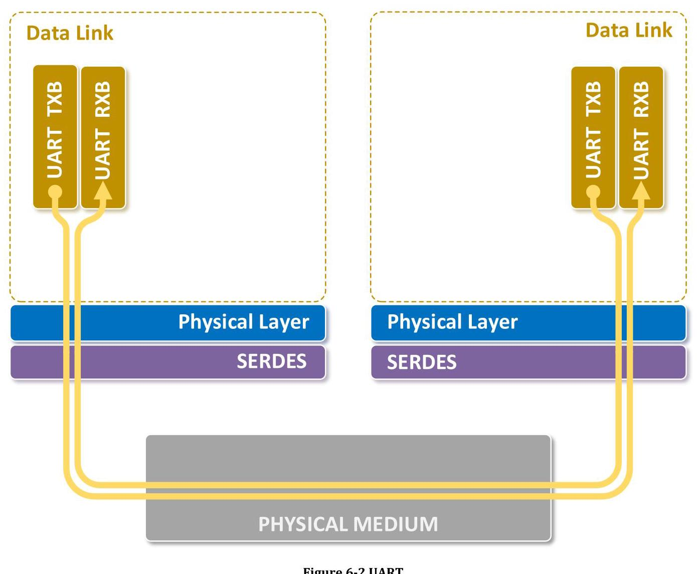
6.2.4 Tx Pacing, Rx Rate Adaptation
Tx Pacing provides a mechanism for a link partner to limit the transmission rate of TL Flits from its link partner. This enables Accelerators to operate their UPLI Clock at lower than line rate and not overflow its Rx FIFO in the Rx rate adaption logic.
Tx Pacing 提供了一种机制，允许链路伙伴限制其对端链路伙伴发送 TL Flit 的传输速率。这样，加速器便可以低于线路速率的时钟运行其 UPLI 时钟，而不会导致其 Rx 速率适配逻辑中的 Rx FIFO 溢出。
6.3 Flit Format
6.3.1 DL Flit Overview
The 640B Flit is comprised of five segments. Each segment is comprised of an integer number of sectors. A sector is 4 bytes. The number of sectors per segment varies based on header and CRC placement in the segment and is described below. The half segment allocation is also described and defines how far to zero fill when there is no TL Flit to pack, see Figure 6-5.
640B Flit 由五个段组成。每个段由整数个扇区构成。一个扇区大小为 4 字节。每段所含扇区数量因头部和 CRC 在段中的位置而异，具体描述见下文。半段的分配规则同样在此说明，它定义了在没有 TL Flit 需要打包时，应填充多少个零字节（参见图 6-5）。
| Segment Header | Number of payload Sectors | Number of payload bytes | Half Segment Sector ranges |
| SH0 | 32 Sectors | 128-bytes | [0:15], [16:31] |
| SH1 | 32 Sectors | 128-bytes | [32:47], [48:63] |
| SH2 | 32 Sectors | 128-bytes | [64:79],[80:95] |
| SH3 | 31 Sectors | 124-bytes | [96:111],[112:126] |
| SH4 | 30 Sectors | 120-bytes | [127:142],[143:156] |
Table 6-1 Sector Allocation per Segment
表 6-1 各段扇区分配
The FH[2:0] fields contain the Flit Header information. This indicates the type of Flit, and sequence number to aid in link level replay, and other information. This is described in detail in section 6.3.2.
FH[2:0] 字段包含 Flit 头部信息。它指示 Flit 的类型、用于协助链路层重放的序列号以及其他信息。详细描述见第 6.3.2 节。
The segment header (SH) defines the starting content for that segment.
段头（SH）定义了该段的起始内容。
The 4-byte CRC is calculated over the entire contents of the DL Flit.
4字节CRC是根据DL微片的全部内容计算得出的。
The diagram below describes the placement different non data fields of the DL Flit:
下图描述了DL Flit中不同非数据字段的放置位置：
- \(\mathrm{{FH}}\left\lbrack {2 : 0}\right\rbrack\) Flit header
- \(\mathrm{{FH}}\left\lbrack {2 : 0}\right\rbrack\) Flit头部
- \(\mathrm{{SH}}\left\lbrack {4 : 0}\right\rbrack\) segment headers
- \(\mathrm{{SH}}\left\lbrack {4 : 0}\right\rbrack\) 段头
- CRC
- 循环冗余校验
- Segment payload
- 分段有效载荷
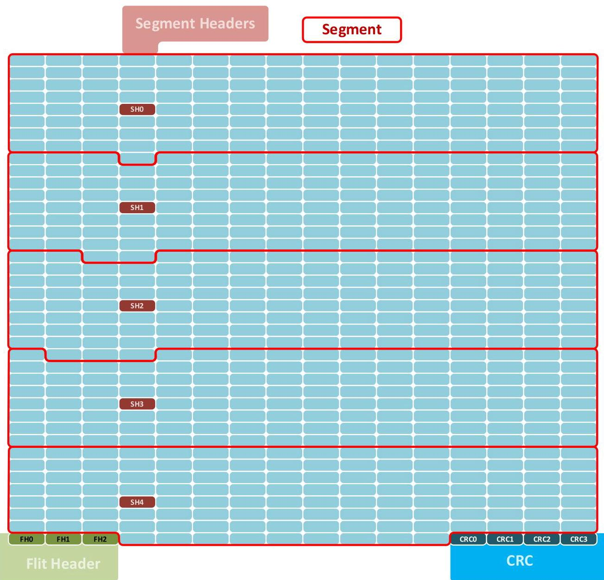
Figure 6-3 DL 640-Byte Flit Overview
图 6-3 DL 640 字节微片概览
6.3.2 Flit Header
See section 6.6.2.
参见第6.6.2节。
6.3.3 Segment Header
The segment header describes the TL Flit sequence that starts in the segment. Up to two 64-byte TL Flits are contained in a TL Flit sequence. The Segment payload may be less than the 128-bytes, and some segments may contain alternative sectors, therefore some of the TL Flit sequence will carry over into the next segment.
段头描述了始于该段内的TL微片序列。一个TL微片序列最多包含两个64字节的TL微片。段负载可能小于128字节，且某些段可能包含替代扇区，因此部分TL微片序列将延续至下一段。
The segment header is 8 bits. The field encodings are shown below. TL Flit[0] and Message[0], indicate the presence of a TL Flit and message data associated with the first TL Flit that is packed into the segment, if present, see Figure 6-5. TL Flit[1] and Message[1] are associated with the second TL Flit if present.
段头为8位。字段编码如下所示。TL Flit[0]与Message[0]指示是否存在与打包进该段的第一个TL Flit相关联的TL Flit及消息数据（若存在，参见图6-5）。TL Flit[1]与Message[1]则与第二个TL Flit（若存在）相关联。
Data Link
数据链路
| Field Name | Position | Description |
| DLAltSector | [0] | DL Alternative sector 0b-No alternative sector in segment 1b-DL alternative sector in segment |
| Reserved | [1] | Reserved |
| Message[0] | [3:2] | TL Flit[0] Message bit indicators if TL Flit[0] is not present then reserved else Message bit indicators |
| TL Flit[0] | [4] | TL Flit[0] present 0b - TL Flit[0] not present 1b - TL Flit[0] present |
| Message[1] | [6:5] | TL Flit[1] Message bit indicators if TL Flit[1] is not present then reserved else Message bit indicators |
| TL Flit[1] | [7] | TL Flit present 0b - TL[1] Flit not present 1b - TL[1] Flit present |
| Wells ( 9 0 0 11 11 11 11 11 11 11 | ||
Table 6-2 Segment Header
表 6-2 段头
6.3.3.1 DL Alternative Sector
When the DLAltSector bit is set, this indicates that the segment contains an alternative sector. A sector is 4 bytes. The Alternative sectors are used for carrying DL-DL messages, see section 6.3.4.
当 DLAltSector 位被置位时，表示该段包含一个备用扇区。一个扇区为 4 字节。备用扇区用于承载 DL–DL 消息，参见第 6.3.4 节。
6.3.3.2 TL Flit Present
When this bit is set it indicates that there is TL Flit that starts in this segment.
当该位被置位时，表示存在从此段开始的 TL Flit。
6.3.3.3 Message
When there is TL Flit that starts in this segment, this field contains the 2-bit message bits with it, 1- bit for each % TL Flit. The message data is simply meta data that is carried transparently over the DL, with the associated TL Flit.
当此段中存在起始的 TL Flit 时，该字段包含与之相关的 2 位消息比特，每个 % TL Flit 对应 1 比特。消息数据仅为元数据，通过 DL 透明承载，并与关联的 TL Flit 一同传输。
6.3.4 Flit packing rules
The diagram below describes the DL Flit field locations including segment payload details. The Sx.By describes the sector number in the segment (Sx), and the byte number in the segment(By).
下图描述了DL Flit字段的位置，包括段的净荷细节。Sx.By 表示段中的扇区编号（Sx），以及段中的字节编号（By）。
| Sx.By | Payload Sector number (x) Sector Byte number (y) | ||||||||||||||
| Segment Headers | Segment | ||||||||||||||
| SO.BO | SO.B1 | SO.B2 | S0.B3 | S1.B0 | S1.B1 | S1.B2 | S1.B3 | S2.B0 | S2.B1 | S2.B2 | S2.B3 | S3.B0 | S3.B1 | S3.B2 | S3.B3 |
| S4.B0 | S4.B1 | S4.B2 | S4.B3 | S5.B0 | S5.B1 | S5.B2 | S5.B3 | S6.B0 | S6.B1 | S6.B2 | S6.B3 | S7.B0 | S7.B1 | S7.B2 | S7.B3 |
| S8.B0 | S8.B1 | S8.B2 | S8.B3 | S9.B0 | S9.B1 | S9.B2 | S9.B3 | S10.B0 | S10.B1 | S10.B2 | S10.B3 | S11.B0 | S11.B1 | S11.B2 | S11.B3 |
| S12.B0 | S12.B1 | S12.B2 | S12.B3 | S13.B0 | S13.B1 | S13.B2 | S13.B3 | S14.B0 | S14.B1 | S14.B2 | S14.B3 | S15.B0 | S15.B1 | S15.B2 | S15.B3 |
| S31.B0 | S31.B1 | S31.B2 | SH0 | S16.B0 | S16.B1 | S16.B2 | S16.B3 | S17.B0 | S17.B1 | S17.B2 | S17.B3 | S18.B0 | S18.B1 | S18.B2 | S18.B3 |
| S19.B0 | S19.B1 | S19.B2 | S19.B3 | S20.B0 | S20.B1 | S20.B2 | S20.B3 | S21.B0 | S21.B1 | S21.B2 | S21.B3 | S22.B0 | S22.B1 | S22.B2 | S22.B3 |
| S23.B0 | S23.B1 | S23.B2 | S23.B3 | S24.B0 | S24.B1 | S24.B2 | S24.B3 | S25.B0 | S25.B1 | S25.B2 | S25.B3 | S26.B0 | S26.B1 | S26.B2 | S26.B3 |
| S27.B0 | S27.B1 | S27.B2 | S27.B3 | S28.B0 | S28.B1 | S28.B2 | S28.83 | S29.B0 | S29.B1 | S29.B2 | S29.B3 | S30.B0 | S30.B1 | S30.B2 | S30.B3 |
| S47.B0 | S47.B1 | S47.B2 | S31.B3 | S32.B0 | S32.B1 | S32.B2 | S32.B3 | S33.B0 | S33.B1 | S33.B2 | S33.B3 | S34.B0 | S34.B1 | S34.B2 | S34.B3 |
| S35.B0 | S35.B1 | S35.B2 | S35.B3 | S36.B0 | S36.B1 | S36.B2 | S36.B3 | S37.B0 | S37.B1 | S37.B2 | S37.B3 | S38.B0 | S38.B1 | S38.B2 | S38.B3 |
| S39.B0 | S39.B1 | S39.B2 | S39.B3 | S40.B0 | S40.B1 | 540.82 | S40.B3 | S41.B0 | S41.B1 | S41.B2 | S41.B3 | S42.B0 | S42.B1 | S42.B2 | S42.B3 |
| S43.B0 | S43.B1 | S43.B2 | S43.B3 | S44.B0 | S44.B1 | S44.B2 | S44.B3 | S45.B0 | S45.B1 | S45.B2 | S45.B3 | S46.B0 | S46.B1 | S46.B2 | S46.B3 |
| S63.B0 | S63.B1 | S47.B3 | SH1 | S48.B0 | S48.B1 | S48.B2 | S48.B3 | S49.B0 | S49.B1 | S49.B2 | S49.B3 | S50.B0 | S50.B1 | S50.B2 | S50.B3 |
| S51.B0 | S51.B1 | S51.B2 | S51.B3 | S52.B0 | S52.B1 | S52.B2 | S52.B3 | S53.B0 | S53.B1 | S53.B2 | S53.B3 | S54.B0 | S54.B1 | S54.B2 | S54.B3 |
| S55.B0 | S55.B1 | S55.B2 | S55.B3 | S56.B0 | S56.B1 | S56.B2 | S56.B3 | S57.B0 | S57.B1 | S57.B2 | S57.B3 | S58.30 | S58.B1 | S58.B2 | S58.B3 |
| S59.B0 | S59.B1 | S59.B2 | S59.B3 | S60.B0 | S60.B1 | S60.B2 | S60.B3 | S61.B0 | S61.B1 | S61.B2 | S61.B3 | S62.B0 | S62.B1 | S62.B2 | S62.B3 |
| S79.B0 | S79.B1 | S63.B2 | S63.B3 | S64.B0 | S64.B1 | S64.B2 | S64.B3 | S65.B0 | S65.B1 | S65.B2 | S65.B3 | S66.B0 | S66.B1 | S66.B2 | S66.B3 |
| S67.B0 | S67.B1 | S67.B2 | S67.B3 | S68.B0 | S68.B1 | S68.B2 | S68.B3 | S69.B0 | S69.B1 | S69.B2 | S69.B3 | S70.B0 | S70.B1 | S70.B2 | S70.B3 |
| S71.B0 | S71.B1 | S71.B2 | S71.B3 | S72.B0 | S72.B1 | S72.B2 | S72.B3 | S73.B0 | S73.B1 | S73.B2 | S73.83 | S74.B0 | S74.B1 | S74.B2 | S74.B3 |
| S75.B0 | S75.B1 | S75.B2 | S75.83 | S76.B0 | S76.B1 | S76.B2 | S76.B3 | S77.B0 | S77.B1 | S77.B2 | S77.B3 | S78.B0 | S78.B1 | S78.B2 | S78.B3 |
| S95.B0 | S79.B2 | S79.B3 | SH2 | S80.B0 | S80.B1 | S80.B2 | S80.B3 | S81.B0 | S81.B1 | S81.B2 | S81.B3 | S82.B0 | S82.B1 | S82.B2 | S82.B3 |
| S83.B0 | S83.B1 | S83.B2 | S83.B3 | S84.B0 | S84.B1 | S84.B2 | S84.B3 | S85.B0 | S85.B1 | S85.B2 | S85.B3 | S86.B0 | S86.B1 | S86.B2 | S86.B3 |
| S87.B0 | S87.B1 | S87.B2 | S87.B3 | S88.B0 | S88.B1 | S88.B2 | S88.B3 | S89.B0 | S89.B1 | S89.B2 | S89.B3 | S90.B0 | S90.B1 | S90.B2 | S90.B3 |
| S91.B0 | S91.B1 | S91.B2 | S91.B3 | S92.B0 | S92.B1 | S92.B2 | S92.B3 | S93.B0 | S93.B1 | S93.B2 | S93.B3 | S94.B0 | S94.B1 | S94.B2 | S94.B3 |
| S111.B0 | S95.B1 | S95.B2 | S95.B3 | S96.B0 | S96.B1 | S96.B2 | S96.B3 | S97.B0 | S97.B1 | S97.B2 | S97.B3 | S98.B0 | S98.B1 | S98.B2 | S98.B3 |
| S99.B0 | S99.B1 | S99.B2 | S99.B3 | S100.B0 | S100.B1 | S100.B2 | S100.B3 | S101.B0 | S101.B1 | S101.B2 | S101.B3 | S102.B0 | S102.B1 | S102.B2 | S102.B3 |
| S103.B0 | S103.B1 | S103.B2 | S103.B3 | S104.B0 | S104.B1 | S104.B2 | S104.B3 | S105.B0 | S105.B1 | S105.B2 | S105.B3 | S106.B0 | S106.B1 | S106.B2 | S106.B3 |
| S107.B0 | S107.B1 | S107.B2 | S107.B3 | S108.B0 | S108.B1 | S108.B2 | S108.B3 | S109.B0 | S109.B1 | S109.B2 | S109.B3 | S110.B0 | S110.B1 | S110.B2 | S110.B3 |
| S111.B1 | S111.B2 | S111.B3 | SH3 | S112.B0 | S112.B1 | S112.B2 | S112.B3 | S113.B0 | S113.B1 | S113.B2 | S113.B3 | S114.B0 | S114.B1 | S114.B2 | S114.B3 |
| S115.B0 | S115.B1 | S115.B2 | \$115.83 | S116.B0 | S116.B1 | S116.B2 | S116.B3 | S117.B0 | S117.B1 | S117.B2 | S117.B3 | S118.B0 | S118.B1 | S118.B2 | S118.B3 |
| S119.B0 | S119.B1 | S119.B2 | S119.B3 | S120.B0 | S120.B1 | S120.B2 | S120.B3 | S121.B0 | S121.B1 | S121.B2 | S121.B3 | S122.B0 | S122.B1 | S122.B2 | S122.B3 |
| S123.B0 | S123.B1 | S123.B2 | S123.B3 | S124.B0 | S124.B1 | S124.B2 | S124.B3 | S125.B0 | S125.B1 | S125.B2 | S125.B3 | S126.B0 | S126.B1 | S126.B2 | S126.B3 |
| S127.B0 | S127.B1 | S127.B2 | S127.B3 | S128.B0 | S128.B1 | S128.B2 | S128.B3 | S129.B0 | S129.B1 | S129.B2 | S129.B3 | S130.B0 | S130.B1 | S130.B2 | S130.B3 |
| S131.B0 | S131.B1 | S131.B2 | S131.B3 | S132.B0 | S132.B1 | S132.B2 | S132.B3 | S133.B0 | S133.B1 | S133.B2 | S133.B3 | S134.B0 | S134.B1 | S134.B2 | S134.B3 |
| S135.B0 | S135.B1 | S135.B2 | S135.B3 | S136.B0 | S136.B1 | S136.B2 | S136.83 | S137.B0 | S137.B1 | S137.B2 | S137.B3 | S138.B0 | S138.B1 | S138.B2 | S138.B3 |
| S139.B0 | S139.B1 | S139.B2 | S139.B3 | S140.B0 | S140.B1 | S140.B2 | S140.B3 | S141.B0 | S141.B1 | S141.B2 | S141.B3 | S142.B0 | S142.B1 | S142.B2 | S142.B3 |
| S156.B0 | S156.B1 | S156.B2 | SH4 | S143.B0 | S143.B1 | S143.B2 | S143.B3 | S144.B0 | S144.B1 | S144.B2 | S144.83 | S145.B0 | S145.B1 | S145.B2 | S145.B3 |
| S146.B0 | S146.B1 | S146.B2 | S146.B3 | S147.B0 | S147.B1 | S147.B2 | S147.B3 | S148.B0 | S148.B1 | S148.B2 | S148.B3 | S149.B0 | S149.B1 | S149.B2 | S149.B3 |
| S150.B0 | S150.B1 | S150.B2 | S150.B3 | S151.B0 | S151.B1 | S151.B2 | S151.B3 | S152.B0 | S152.B1 | S152.B2 | S152.B3 | S153.B0 | S153.B1 | S153.B2 | S153.B3 |
| FHO | FH1 | FH2 | S156.83 | S154.B0 | S154.B1 | S154.B2 | S154.B3 | S155.B0 | S155.B1 | S155.B2 | S155.B3 | CRCO | CRC1 | CRC2 | CRC3 |
| FLITHeader | CRC | ||||||||||||||
Figure 6-4 DL Flit with segment details
图 6-4 包含段细节的 DL Flit
The following describe the Flit packing rules.
以下描述了 Flit 打包规则。
- The DL Flit packer operates on a sector basis, a sector is 4 bytes.
- DL Flit 打包器以扇区为单位运行，一个扇区为 4 字节。
- DL Alternative sectors have priority, if an DL alternative sector is indicated then it is placed in the first sector of the segment, before the current TL Flit, or carry over from a previous TL Flit. The first sector is the lowest sector number in the segment see Table 6-1.
DL 替代扇区具有优先级，若指明了 DL 替代扇区，则将其放置在该段落的第一个扇区中，位于当前 TL Flit 之前，或源自前一个 TL Flit 的延续。第一个扇区是段落中编号最低的扇区，参见表 6-1。
- A TL Flit takes up sixteen sectors (64-bytes).
- 一个 TL Flit 占用十六个扇区（64 字节）。
- A DL message (Alternative sectors) takes up one sector (4-bytes).
- 一条 DL 消息（备选扇区）占用一个扇区（4 字节）。
- There shall be at least one unallocated sector in the segment to start adding a TL Flit.
- 段中应至少有一个未分配的扇区，才能开始添加 TL Flit。
- If a TL Flit does not pack into the current segment the remainder is carried over to the next segment.
- 如果 TL Flit 无法完全打包到当前段中，剩余部分将延续到下一段。
- The SH is encoded as 0x00 when no TL Flits and no DL message start in the segment.
- 当段中没有 TL Flit 且没有 DL 消息开始时，SH 编码为 0x00。
- TL Flits shall be packed in the order received.
- TL Flits 应以接收的顺序打包。
- Up to 2 TL Flits start packing into a segment.
- 最多 2 个 TL 微片开始打包到一个段中。
Data Link
数据链路
Ultra Accelerator Link Consortium Inc. (UALink) - UALink_200 Rev 1.0 Specification
- TL Flits shall be packed on the fly to reduce transmitter latency, the first tick of the packer may not have a TL Flit[0] to pack, the remaining % segment is zero filled, the 2'nd tick of the packer may have a TL Flit[1] available, and that starts to pack, if sectors are available. See Table 6-2 for '/2 segment definition.
- TL Flit应当动态打包以降低发送器延迟，打包器的第一个节拍可能没有 TL Flit[0] 可供打包，剩余的%段填零，第二个节拍打包器可能有 TL Flit[1] 可用，此时若扇区可用便开始打包。有关 /2 分段定义，请参见表 6-2。
- In the special case where the first % segment is filled with a previous TL Flit carry over and an alternative sector, and there is a TL Flit to add, it is designated TL Flit[0].
- 在特殊情况下，第一个%段由之前的TL Flit结转和替代扇区填充，并且有一个TL Flit要添加，该TL Flit被指定为TL Flit[0]。
- Note: with a 512-bit (64-byte) data path, a DL Flit is packed every 10 clock ticks. DL overhead of 12 bytes (and occasional DL messages) is such that TL Flits cannot be continuously packed every 2 ticks. Other data widths are possible, the same packing behavior shall be met.
- 注：在512位（64字节）数据通路下，每10个时钟节拍打包一个DL Flit。DL的12字节开销（以及偶发的DL消息）导致TL Flit无法每隔2个节拍连续打包。其他数据宽度也是可能的，但应满足相同的打包行为。
Packing flow described below (see Figure 6-5):
下方的打包流程（见图6-5）：
- Start packing a segment.
- 开始打包一个段。
- If there is a DL ALT sector, it is placed in the first sector of the segment and continue.
- 如果存在 DL ALT 扇区，则将其放置在段的第一个扇区中，并继续。
- If there is carry over from the previous Segment pack it in sector order and continue.
- 如果存在上一数据段的结转部分，请按扇区顺序打包并继续。
- If TL Flit[0] is available, on this clock tick, then start packing it in sector order into the current segment and continue, else zero unallocated sectors to the end of the half segment and goto (6).
- 若 TL Flit[0] 在此时钟节拍可用，则开始按扇区顺序将其打包至当前分段并继续，否则将未分配的扇区清零直至半分段末尾，然后跳转至 (6)。
- If TL Flit[0] completes packing continue, else save remaining TL Flit[0] in carry over and done.
- 如果 TL Flit[0] 完成打包则继续，否则将剩余的 TL Flit[0] 保存到结转中并结束。
- If there are unallocated sectors continue, else done.
- 如果存在未分配的扇区则继续，否则结束。
- If TL Flit[1] is available, on this clock tick, then start packing it in sector order into the current segment else zero remaining unallocated sectors and done.
- 如果 TL Flit[1] 在当前时钟节拍可用，则按扇区顺序开始将其打包到当前段中；否则，将剩余未分配的扇区置零并完成打包。
- If TL Flit[1] packing is completed then done, else save remaining TL Flit[1] in carry over and done.
- 若 TL Flit[1] 打包完成则结束，否则将剩余的 TL Flit[1] 保存到结转（carry over）中并结束。
- goto (1)
- 跳转至 (1)
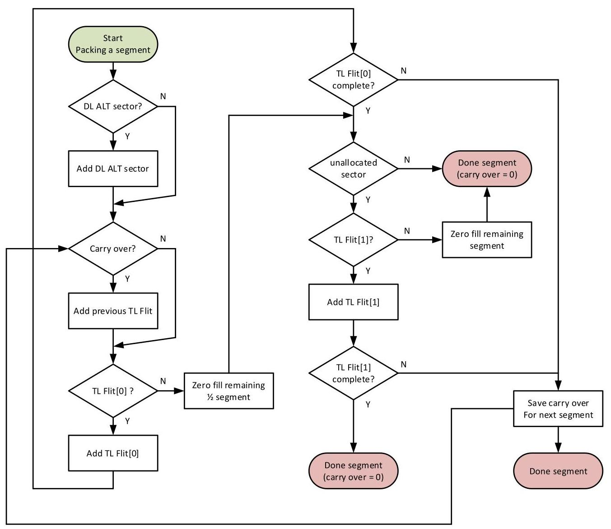
Figure 6-5 Flit packing flow chart
图6-5 Flit封装流程图
6.3.5 TL Flit to DL Flit Mapping
In the following examples the TL Flit is shown in mirrored view so that it aligns with the logical view of the DL Flit. The DL Flit sequential ordering is left to right, top to bottom, i.e., in the order of sector and byte numbering.
在以下示例中，TL Flit 以镜像视图显示，以便与 DL Flit 的逻辑视图对齐。DL Flit 的顺序排列为从左到右、从上到下，即按照扇区和字节编号的顺序。
Figure 6-6 describes that TL Flit[0] starts packing into segment[0]. The message bits[1:0] along with TL Flit[0] present is encoded into SH0. TL Flit sector[0] maps to DL Flit sector[0], and so on.
图 6-6 描述了 TL Flit[0] 开始打包到 segment[0] 的过程。消息比特位 [1:0] 与当前的 TL Flit[0] 一起被编码到 SH0 中。TL Flit 扇区 [0] 映射到 DL Flit 扇区 [0]，依此类推。
In this example there is no carry over from a previous TL Flit.
在此示例中，没有来自前一个 TL 微片的遗留数据。
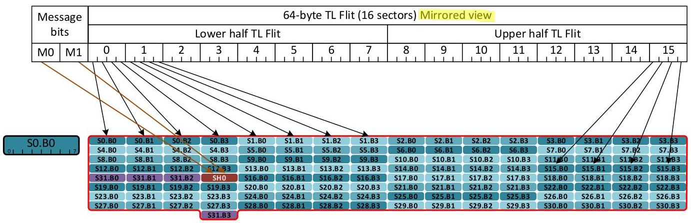
Figure 6-6 TL Flit[0] example 1
图 6-6 TL Flit[0] 示例 1
Figure 6-7 describes that TL Flit[1] starts packing into segment[0]. The message bits[1:0] along with TL Flit[1] present is encoded into SH0. TL Flit sector[0] maps to DL Flit sector[16], and so on.
图 6-7 描述了 TL Flit[1] 开始打包到 segment[0] 中。message bits[1:0] 与 TL Flit[1] present 一起被编码到 SH0 中。TL Flit sector[0] 映射到 DL Flit sector[16]，依此类推。
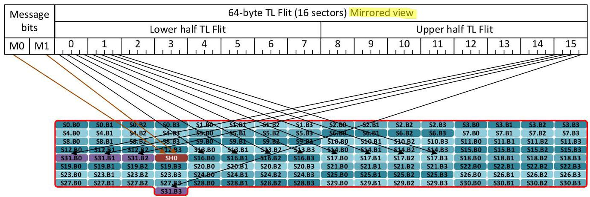
Figure 6-7 TL Flit[1] example 1
图 6-7 TL Flit[1] 示例 1
Figure 6-8 describes that TL Flit[0] starts packing into segment[4]. The message bits[1:0] along with TL Flit[0] present is encoded into SH4. TL Flit sector[0] maps to DL Flit sector[143], and so on, into the next segment and DL Flit.
图 6-8 描述了 TL Flit[0] 开始打包到 segment[4] 中。消息位[1:0] 连同 TL Flit[0] 的存在被编码进 SH4。TL Flit 扇区[0] 映射到 DL Flit 扇区[143]，依此类推，进入下一个 segment 和 DL Flit。
There is no space for TL Flit[1].
没有空间容纳 TL Flit[1]。
In this example there is an alternative sector and a previous carry over up to sector[142].
在此示例中，存在一个替代扇区，并且先前的结转至扇区[142]。
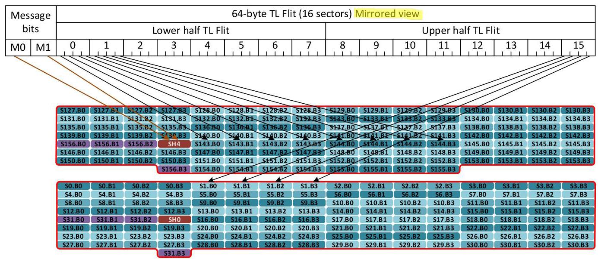
Figure 6-8 TL Flit[0] example 2
图6-8 TL Flit[0]示例2
6.3.6 DL Flit to 64B/66B encoding
The Dl Flit to \({64}\mathrm{\;B}/{66}\mathrm{\;B}\) encoding is shown below. The DL Flit is redrawn with the same width as the 64-bit PCS interface, and show reflected in the x-axis. The sequence is left to right, bottom to top, i.e., in sector order. The Sync Header (SH) is set to 0b01 for data code.
下面显示了从 Dl Flit 到 \({64}\mathrm{\;B}/{66}\mathrm{\;B}\) 的编码。DL Flit 在与 64 位 PCS 接口相同的宽度下重新绘制，并显示沿 x 轴反射。序列是从左到右，从下到上，即按扇区顺序。同步头（SH）对于数据码设置为 0b01。
- Note: The Sync Header is added in the RS layer. The DL only transmits and receives data Flits.
- 注：同步头在RS层添加。DL仅发送和接收数据微片。
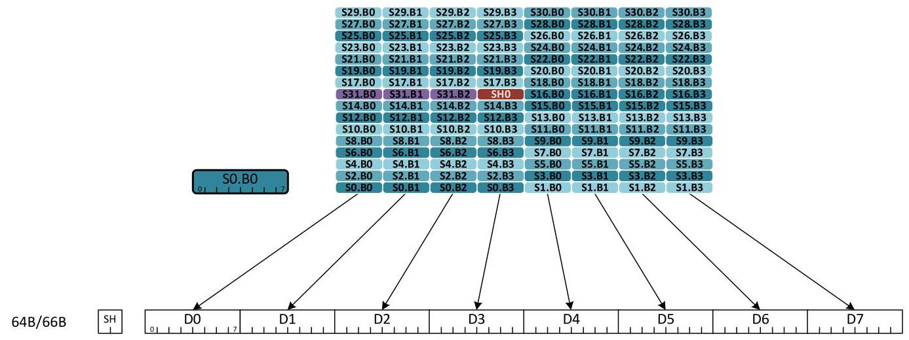
Figure 6-9 DL Flit to 64B/66B Encoding
图 6-9 DL Flit 到 64B/66B 编码
6.3.7 CRC
A 4-byte CRC is calculated and placed in the last bytes in the DL Flit.
计算一个 4 字节 CRC，并将其放置在 DL 微片的最后几个字节中。
The CRC calculation follows 802.3 , see clause 3.2.9 Frame Check Sequence (FCS) field. The CRC is calculated over the entire 640Bytes, with the CRC field padded to 0x0.
CRC 计算遵循 802.3，参见第 3.2.9 条款帧校验序列 (FCS) 字段。CRC 是对整个 640 字节进行计算的，其中 CRC 字段填充为 0x0。
The CRC is transmitted in the following order: \({x}^{0},{x}^{1},\ldots {x}^{31}\) . This is the reverse order compared to IEEE 802.3 FCS. CRC[0] contains bits \({x}^{0},{x}^{1},\ldots {x}^{7}\) , CRC[1] contains bits \({x}^{8},{x}^{1},\ldots {x}^{15}\) , etc.
CRC 按以下顺序传输：\({x}^{0},{x}^{1},\ldots {x}^{31}\)。这与 IEEE 802.3 FCS 的顺序相反。CRC[0] 包含位 \({x}^{0},{x}^{1},\ldots {x}^{7}\)，CRC[1] 包含位 \({x}^{8},{x}^{1},\ldots {x}^{15}\)，等等。
6.4 DL messages
Reserved fields shall be set to \(0 \times 0\) and shall be ignored by receiving link partner.
保留字段应设置为 \(0 \times 0\)，并且接收链路伙伴应忽略它们。
6.4.1 Message Overview
6.4.1.1 Message Types
Any Segment of the DL Flit may contain an DL alternative sector (DLAltSector ). The DLAltSector is used to send DL messages. DL messages originate at the DL and terminate at the DL.
DL Flit 的任何段都可能包含一个 DL 替代扇区（DLAltSector）。DLAltSector 用于发送 DL 消息。DL 消息始于 DL，也终止于 DL。
All messages have bit 0 as a reserved.
所有消息的位0均为保留位。
A summary of the message classes and types are shown below.
下表汇总了消息类别及其类型。
| Message class (mclass) | code | Message Type (mtype) | code |
| Basic Messages | 0b0000 | No-Op message | 0b000 |
| TL Rate Notification | 0b100 | ||
| Device ID Request | 0b101 | ||
| Port Number Request and Response | 0b110 | ||
| Control Messages | 0b1000 | DL Channel On/Offline negotiation | 0b100 |
| UART Messages | 0b0001 | UART Stream Transport Message | 0b000 |
| UART Stream Credit Update | 0b001 | ||
| UART Stream Reset Request | 0b110 | ||
| UART Stream Reset Response | 0b111 |
Table 6-3 DL Message Types
表 6-3 数据链路层消息类型
6.4.1.2 Message arbitration
There are several sources of messages. All messages are a single DWord sequence, except for UART Stream Transport Message. This can be up to 33 Dwords. UART Stream Transport Message shall be packed sequentially into each Segment, which may span multiple Flits. Other DL message shall be blocked while the UART Stream Transport Message is transmitted.
消息有几个来源。除 UART 流传输消息外，所有消息均为单个双字序列。该消息的长度最多可达 33 个双字。UART 流传输消息应被顺序打包到每个段中，这些段可能跨越多个微片。在发送 UART 流传输消息期间，应阻塞其他 DL 消息。
There are two levels of arbitration. The first Level is within each Message type. Round Robin is used between each of the Basic Messages, to select a potential winner for the group. Round Robin is used between each of the Control Messages, to select a potential winner for the group. Round Robin is used between each of the UART Messages, to select a potential winner for the group. The final level of arbitration is round robin between the Basic Message group, the Control Message group, and the UART Message group.
仲裁分为两级。第一级在每种消息类型内部进行。在基本消息之间采用Round Robin，选出该组的潜在胜者。在控制消息之间采用Round Robin，选出该组的潜在胜者。在UART消息之间采用Round Robin，选出该组的潜在胜者。最后一级仲裁是在基本消息组、控制消息组和UART消息组之间进行Round Robin。
6.4.2 Basic Messages
Basic messages are used to send information from one link partner to another, or to request information from one link partner to another. There is no negotiation.
基本消息用于从一个链路伙伴向另一个链路伙伴发送信息，或从一个链路伙伴向另一个链路伙伴请求信息。其中没有协商过程。
6.4.2.1 Generic Flow
6.4.2.1.1 Single Request
The single request flow is shown below. In this case the local link partner makes a request, and the remote link partner shall accept the request with an Ack response.
单一请求流程如下所示。在此情况下，本地链路伙伴发出请求，远程链路伙伴应当以 Ack 响应接受该请求。
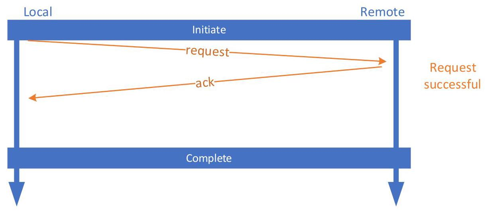
Figure 6-10 Single Request Flow
本章定义了UALink协议的数据链路层，位于事务层与物理层之间。其主要功能是将64字节的事务层（TL）微片打包为640字节的数据链路（DL）微片进行传输，并在接收时解包。数据链路层提供了带内消息服务用于链路管理，支持如宣告TL时钟速率、查询设备与端口ID以及协商通道状态等功能。内置了类似UART的机制用于固件通信，并采用基于信用的流量控制以防止缓冲区溢出。为支持降低内部时钟的节能加速器，定义了发送端节流机制，避免接收端FIFO溢出。
链路可靠性通过重放协议保障：每个DL载荷微片携带序列号和32位CRC。接收端确认正确接收的微片；若发生CRC错误或序列号乱序，则发出重放请求。发送端维护重放缓冲区，以重传未确认的微片。微片头部区分显式序列号微片和携带ACK或重放请求的命令微片。通过超时计数器监控前向进度，并通过丢弃损坏微片并将链路转换到安全状态来遏制错误。
数据链路层状态机包括Fault、Idle、NOP和Up状态，其转换由物理层故障、接收到的控制微片或重放超时驱动。总体而言，数据链路层在提供旁带通信和速率适配的同时，确保事务层流量的有序、无损传递，构成了UALink互连的可靠传输核心。
6.4.2.1.2 Two Requests
It is possible that two request are made at the same time with the same mclass and mtype. These requests are independent and thus operate as two independent sequences. This is shown below.
有可能同时发出两个具有相同 mclass 和 mtype 的请求。这些请求是独立的，因此作为两个独立的序列运行。如下所示。
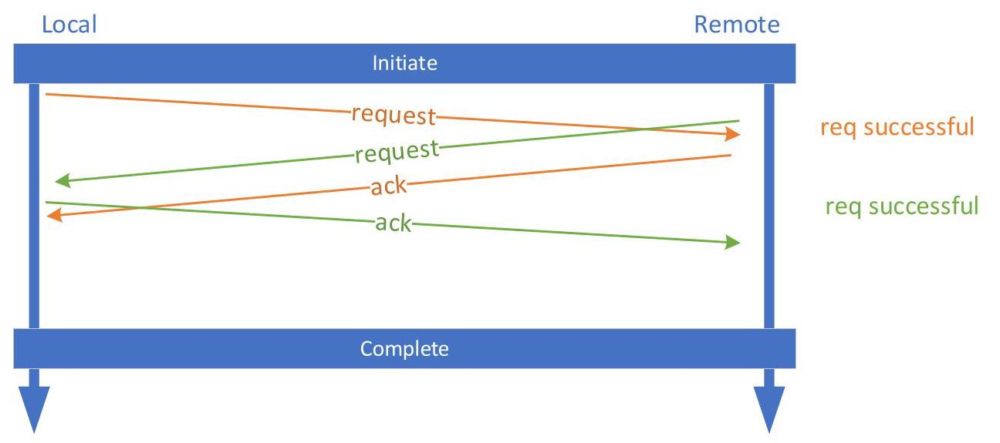
Figure 6-11 Two Requests Flow
图 6-11 两个请求流
6.4.2.2 TL Rate Notification
The TL Rate Notification Message is a message used to convey change in the TL rate (clock frequency) to a connected link partner. The use case of this message is described in section 6.56.4.4. It is a unidirectional message only for notification. The link partner shall respond with an Ack with in 1us of the request.
TL 速率通知消息是用于向连接的链路伙伴传达 TL 速率（时钟频率）变化的消息。该消息的使用场景在第 6.56.4.4 节中描述。它是一个单向消息，仅用于通知。链路伙伴应在收到请求后的 1 微秒内回复 ACK。
Data Link
数据链路
| Field | Bit | Description |
| Compressed | 0 | Set to 0, not supported |
| Reserved | 1 | Reserved |
| mclass | 5:2 | Message Class |
| mtype | 8:6 | Message Type |
| Reserved | 11:9 | Reserved |
| Ack | 12 | 0: Request message 1: Response message |
| Reserved | 15:13 | Reserved |
| Rate | 31:16 | TL rate, only valid for Request message, reserved otherwise. |
Table 6-4 TL Rate Notification
表 6-4 TL 速率通知
Rate is expressed as \({50.0}\mathrm{{KHz}}\) per lsb. Full rate at \({1562.5}\mathrm{{MHz}}\) is coded at 31,250, decimal. The reference clock rate \({156.25}\mathrm{{MHz}}\) would be coded as 3,125, decimal. The reference clock rate is the minimum rate that shall be supported.
速率表示为每 lsb \({50.0}\mathrm{{KHz}}\)。\({1562.5}\mathrm{{MHz}}\) 下的全速率以十进制数 31,250 编码。参考时钟速率 \({156.25}\mathrm{{MHz}}\) 将编码为十进制数 3,125。参考时钟速率是必须支持的最低速率。
A 1x4,800G DL is assumed to be 512 bits wide at 1562.5 MHz, and thus 512 * 1562.5 MHz = 800Gbps. Other data widths are possible and shall normalize to 512-bit width. A 2x2, 400G DL per link is assumed to be 256 bits wide at 1562.5 MHz, and thus 256 * 1562.5 MHz = 400Gbps. Other data widths are possible and shall normalize to 256-bit width. A 4x1, 200G DL per link is assumed to be 128 bits wide at 1562.5 MHz, and thus 128 * 1562.5 MHz = 200Gbps. Other data widths are possible and shall normalize to 128-bit width. Note: There is overhead in the DL Flit, 4 bytes CRC, 3 bytes Flit header, and 5 bytes segment header. There are 628-bytes of TL payload per 640-byte DL Flit. Backpressure from the Tx pipeline will naturally limit the throughput to \({\left( {628}/{640}\right) }^{ * }{200} = {196.25}\) Gbps. This is equivalent to a register setting of 30,664, decimal, or 1533.20 MHz.
假定一个1x4、800G的数据链路（DL）在1562.5 MHz下宽度为512比特，因此512 * 1562.5 MHz = 800 Gbps。其他数据宽度也可行，并应归一化到512比特宽度。假定一个2x2、400G的每链路DL在1562.5 MHz下宽度为256比特，因此256 * 1562.5 MHz = 400 Gbps。其他数据宽度也可行，并应归一化到256比特宽度。假定一个4x1、200G的每链路DL在1562.5 MHz下宽度为128比特，因此128 * 1562.5 MHz = 200 Gbps。其他数据宽度也可行，并应归一化到128比特宽度。注意：DL Flit中存在开销，包括4字节CRC、3字节Flit头部和5字节段头部。每640字节的DL Flit中有628字节的TL有效载荷。来自Tx流水线的反压将自然地将吞吐量限制在 \({\left( {628}/{640}\right) }^{ * }{200} = {196.25}\) Gbps。这相当于一个寄存器设置为30664（十进制），或1533.20 MHz。
6.4.2.3 Device ID Request
To aid in the determination of the scale out network topology a Link partner can request the ID of its link partner. The link partner shall respond within 1.0 us of the request. If the Link partner has not been configured with an ID, then it returns 0x0 in the Valid bit, as well as the ID field. The requesting link partner advertises its ID if known, in the request.
为协助确定水平扩展网络拓扑，链路伙伴可请求其链路伙伴的 ID。链路伙伴应在收到请求后 1.0 微秒内响应。若链路伙伴尚未配置 ID，则在有效位及 ID 字段中均返回 0x0。发起请求的链路伙伴若已知自身 ID，则在请求中通告该 ID。
When the Ack field is Request:
当 Ack 字段为 Request 时：
- Valid indicates if the ID is valid.
- Valid 指示该 ID 是否有效。
- Type indicates switch or Accelerator.
- 类型指示交换机或加速器。
- ID indicates the requestor ID, set to 0x0 if valid is set to 0x0.
- ID 表示请求者 ID，如果 valid 设置为 0x0，则 ID 设置为 0x0。
When the Ack field is Response:
When the Ack field is Response: ```
这里明显分为两部分：一是“以下是文章全文的摘要，供翻译时参考上下文：”后面跟着一大段英文摘要。然后是一个分隔线“---”，再然后是一段指令“You are a professional academic translator. ...” 最后一句是：“When the Ack field is Response:”。这最后一句就是“待翻译的 Markdown 段落”。因为指令说“Translate the user's Markdown paragraph”，而这里的“user's Markdown paragraph”很可能是这一句话。前面的摘要只是为了提供上下文。所以，我需要翻译“When the Ack field is Response:”这句话。
但是要注意，“Response”可能是一个保留字，根据指令“Do not translate code or formulas”，应该保留。所以把这句话翻译成中文时，“Ack”可能需要译为“确认”，“Response”保留。所以 “When the Ack field is Response:” 可译为 “当 Ack 字段为 Response 时：”。但还要考虑是否要加粗或斜体？原文没有Markdown标记，所以直接翻译即可。
那么最终输出就是这句话的中文翻译，无解释。当 Ack 字段为 Response 时：
- Valid indicates if the ID is valid.
Valid指示该ID是否有效。
- Type indicates switch or Accelerator.
- 类型指示交换机或加速器。
- ID indicates the responder ID, set to 0x0 if valid is set to 0x0.
- ID 指示响应者 ID，若 valid 设为 0x0 则设为 0x0。
| Field | Bit | Description |
| Compressed | 0 | Set to 0, not supported |
| Reserved | 1 | Reserved |
| mclass | 5:2 | Message Class |
| mtype | 8:6 | Message Type |
| Reserved | 11:9 | Reserved |
| Ack | 12 | 0: Request message 1: Response message |
| Reserved | 15:13 | Reserved |
| ID | 25:16 | 10-bit Switch or accelerator ID |
| Reserved | 28:26 | Reserved |
| Type | 30:29 | 0: for a switch 1: for an accelerator other reserved |
| Valid | 31 | 0: if ID is not valid 1: if ID is valid |
Table 6-5 Device ID Request
表6-5 设备ID请求
6.4.2.4 Port Number Request and Response
To aid in the determination of the scale up network topology a Link partner can request the port number of its partner, attached on the link. The link partner shall respond with in 1us of the request. If the Link partner has not been configured with its port number, then it returns \(0 \times 0\) in the Valid bit, and the port number field is undefined and set to 0x0 . The requesting link partner advertises its port number if known, in the request.
为了帮助确定扩展网络拓扑，链路伙伴可以请求其连接在链路上的伙伴的端口号。链路伙伴应在请求后的1微秒内做出响应。如果链路伙伴尚未配置其端口号，则其在有效位（Valid bit）中返回 \(0 \times 0\)，且端口号字段未定义，并设置为 0x0。发出请求的链路伙伴若已知自身的端口号，则会在请求中宣告该端口号。
When the Ack field is Request:
当 Ack 字段为 Request 时：
- Valid indicates if the number is valid.
- Valid 指示该数字是否有效。
- Port number indicates the port number of the device, if valid is set.
- 端口号指示设备的端口号（如果 valid 被设置）。
When the Ack field is Response:
当确认字段为响应时：
- Valid indicates if the number is valid.
- Valid 表示该数字是否有效。
- Port number indicates the port number of the device, if valid is set .
- 端口号指示设备的端口号，若有效位被设置。
| Field | Bit | Description |
| Compressed | 0 | Set to 0, not supported |
| Reserved | 1 | Reserved |
| mclass | 5:2 | Message Class |
| mtype | 8:6 | Message Type |
| Reserved | 11:9 | Reserved |
Data Link
数据链路
本规范章节定义了UALink协议的数据链路层，位于事务层与物理层之间。其主要功能是将64字节的事务层（TL）微片打包成640字节的数据链路（DL）微片用于发送，并在接收时解包。数据链路层提供用于链路管理的带内消息服务，支持诸如通告TL时钟速率、查询设备和端口ID以及协商通道状态等功能。包含一种类UART机制用于固件通信，并采用基于信用的流量控制以防止缓冲区溢出。为支持降低内部时钟频率以节省功耗的加速器，定义了发送端调速机制，以避免接收端FIFO溢出。
链路可靠性通过重放协议保证：每个DL净荷微片携带一个序列号和一个32位CRC。接收端对正确接收的微片进行确认；若发生CRC错误或序列号乱序，则发出重放请求。发送端维护一个重放缓冲区以重传未确认的微片。微片头部可区分显式序列号微片与携带ACK或重放请求的命令微片。使用超时计数器监控前向进展，通过丢弃损坏的微片并将链路转换到安全状态来遏制错误。
DL链路状态机包含故障、空闲、NOP和正常工作状态，其状态转换由物理层故障、接收到的控制微片或重放超时触发。总之，数据链路层确保事务层流量的有序、无损传递，同时提供边带通信和速率适配，构成了UALink互连的可靠传输核心。
| Ack | 12 | 0: Request message 1: Response message |
| Reserved | 15:13 | Reserved |
| Port number | 27:16 | 10-bit port number. |
| Reserved | 30:28 | Reserved |
| Valid | 31 | 0: if port number is not valid 1: if port number is valid |
Table 6-6 Port ID Request
表6-6 端口ID请求
以下是文章全文的摘要，供翻译时参考上下文： 该规范章节定义了UALink协议的数据链路层，位于事务层和物理层之间。其主要功能是将64字节的事务层（TL）flit打包成640字节的数据链路（DL）flit用于传输，并在接收时解包。DL为链路管理提供带内消息服务，支持功能如通告TL时钟速率、查询设备和端口ID，以及协商通道状态。包含一个类似UART的机制用于固件通信，并采用基于信用的流控制防止缓冲区溢出。为支持降低内部时钟的节能加速器，定义了发送器pacing以避免接收器FIFO溢出。
链路可靠性由重放协议保证：每个DL有效载荷flit携带一个序列号和一个32位CRC。接收器确认正确接收的flit；如果发生CRC错误或序列号乱序，则发出重放请求。发送器维护一个重放缓冲区以重传未确认的flit。Flit头部分区分显式序列号flit和携带ACK或重放请求的命令flit。通过超时计数器监控前向进展，并通过丢弃损坏的flit并将链路转换为安全状态来遏制错误。
DL链路状态机包括Fault、Idle、NOP和Up状态，状态转换由物理层故障、接收的控制flit或重放超时驱动。总体而言，数据链路层确保TL流量的有序、无损传递，同时提供边带通信和速率适配，构成UALink互连的可靠传输核心。
6.4.2.5 No-OP Message
No-Op messages are used only in UART reset sequences. 40 No-Op messages shall be transmitted during UART reset sequence to flush any data between the transmitter and receiver. The mtype and mclass fields are set according to Table 6-3. No-Op messages are not ACK'd.
No-Op 消息仅在 UART 复位序列中使用。在 UART 复位序列期间应发送 40 个 No-Op 消息，以清除发送器与接收器之间的任何残留数据。mtype 和 mclass 字段根据表 6-3 进行设置。No-Op 消息不需要确认。
| Field | Bit | Description |
| Compressed | 0 | Set to 0, not supported |
| Reserved | 1 | Reserved |
| mclass | 5:2 | Message Class |
| mtype | 8:6 | Message Type |
| Reserved | 31:9 | Reserved |
Table 6-7 No-Op Message
表6-7 空操作消息
6.4.3 Control Messages
Control messages are used by the DL to negotiate a change in operation on the Link. Once the Negotiation completes successfully the change takes place. If the negotiation unsuccessfully completes , then no change occurs. The Link is peer to peer and either link partner may request a change. Some link partner types (i.e., Switches) are not permitted to initiate some requests.
控制消息由数据链路层（DL）用于协商链路上的操作变更。一旦协商成功完成，变更即生效。如果协商未成功完成，则不会发生任何更改。链路是对等的，任一链路伙伴均可请求更改。某些链路伙伴类型（即交换机）不允许发起某些请求。
Once a link partner receives a request it shall not schedule a request of the same mclass and mtype, until the current request completes. It is possible for two requests to occur at the same time, or near the same time, such that two conflicting or identical request exists, of the same mclass and mtype. When a request is made any subsequent request of the same mclass mtype that is received the link partner shall not respond with a decision pending, it shall respond with an Ack or Nack.
一旦某个链路伙伴收到一个请求，在该请求完成之前，它不应再调度相同 mclass 和 mtype 的请求。有可能两个请求同时或近乎同时发生，从而导致存在两个冲突或相同 mclass 与 mtype 的请求。当已发出一个请求时，对于随后收到的任何相同 mclass 和 mtype 的请求，该链路伙伴不应以“决策待定”作为响应，而应以确认（Ack）或否定确认（Nack）来回应。
There is a resolution function, for each mtype, such that conflicting requests resolve to one request being Ack'd and the other request being Nack'd.
对于每种 mtype，存在一个解决函数，使得冲突的请求被解析为一个请求被确认（Ack'd）而另一个请求被否定确认（Nack'd）。
6.4.3.1 Generic Flow
6.4.3.1.1 Single Successful Request Flow
The single successful request flow is shown below. In this case the local link partner makes a request, and the remote link partner accepts the request with an Ack. The local link partner transmits a confirming ACK to the remote link partner.
单个成功请求的流程如下所示。在这种情况下，本地链路伙伴发出请求，远程链路伙伴以 Ack 接受该请求。本地链路伙伴向远程链路伙伴发送一个确认 ACK。
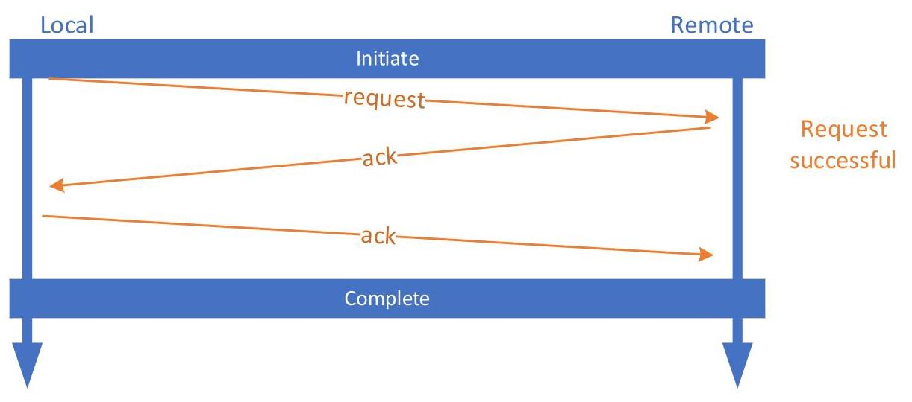
Figure 6-12 Single Successful Request Flow
图 6-12 单个成功请求流程
6.4.3.1.2 Single Unsuccessful Request Flow
The single unsuccessful request flow is shown below. In this case the local link partner makes a request, and the remote link partner rejects the request with an Nack.
单个不成功的请求流程如下所示。在此情况下，本地链路伙伴发起请求，而远程链路伙伴以Nack拒绝该请求。
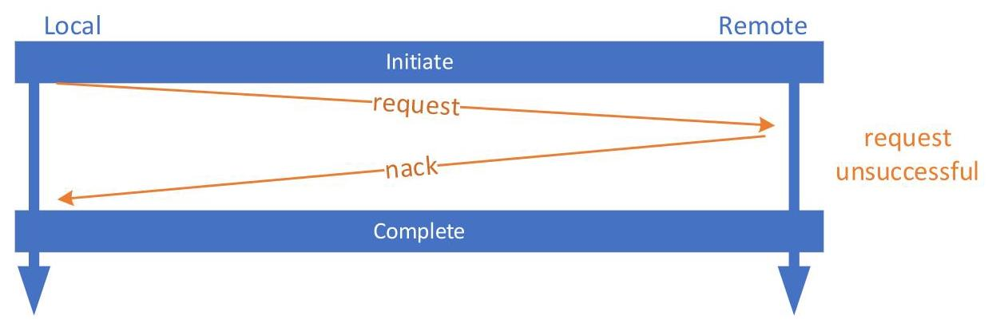
Figure 6-13 Single Unsuccessful Request Flow
图 6-13 单个不成功的请求流程
6.4.3.1.3 Single decision pending Request Flow
The single decision pending request flow is shown below. In this case the local link partner makes a request, and the remote link partner responds with decision pending Decision. The Remote link partner is required to issue a request later. The Local link partner shall not issue the same mclass mtype request until after the Remote link partner issues a new request of the decision pending mclass and mtype and it is completed.
单一决策待定请求流程如下所示。此时，本地链路伙伴发出请求，远端链路伙伴回复“决策待定”（Decision Pending）。远端链路伙伴必须稍后发起一个请求。本地链路伙伴不得重复发出相同的 mclass mtype 请求，直到远端链路伙伴发起一个新的、属于该决策待定的 mclass 和 mtype 的请求并完成之后。
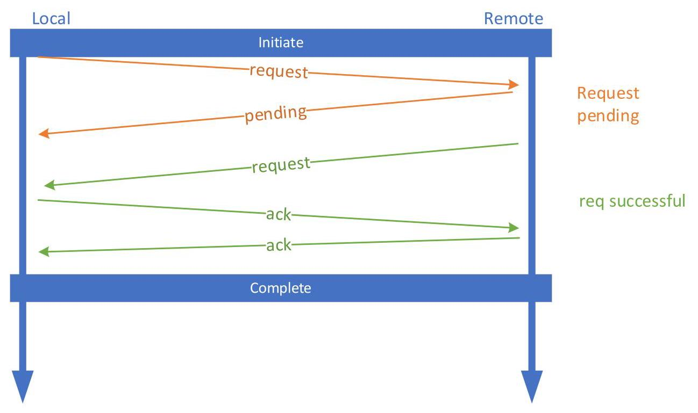
Figure 6-14 Single decision pending Request Flow
图 6-14 单个待决请求流程
6.4.3.1.4 Conflicting Request Flow
The conflicting request flow is shown below. In this scenario both local and remote link partners make a request before they have received the conflicting request. The remote link partner compares its transmitted request to the received request, and determines that the received request should be acknowledged, and sends the Ack. The Loal link partner compares its transmitted request to the received request and determines that the received request should not be acknowledged and sends the Nack. The local link partner receives the Ack and sends the confirming Ack to the remote link partner.
冲突请求流程如下所示。在此场景中，本地和远端链路伙伴均在收到冲突请求之前发出了请求。远端链路伙伴将其发出的请求与收到的请求进行比较，确定应确认收到的请求，并发送 Ack。本地链路伙伴将其发出的请求与收到的请求进行比较，确定不应确认收到的请求，并发送 Nack。本地链路伙伴收到 Ack 后，向远端链路伙伴发送确认 Ack。
The local link partner is required to transmit the Nack and Ack in the order shown. Responses relating to received requests or responses shall be in the order received. The resolution function is the same in both link partners, so that they both decide consistently how to resolve the conflict.
本地链路伙伴需按所示顺序发送 Nack 和 Ack。与收到的请求或响应相关的应答应按接收顺序进行。解析函数在双方链路伙伴中相同，因此它们会一致地决定如何解决冲突。
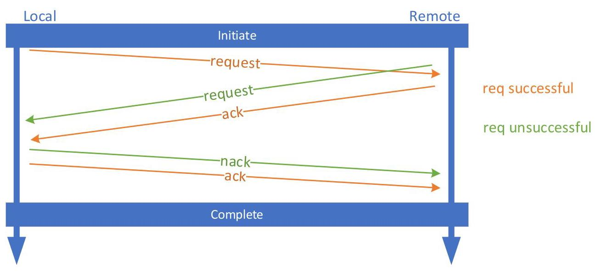
Figure 6-15 Conflicting request flow
图6-15 冲突请求流程
6.4.3.1.5 Identical Request Flow
The identical request flow is shown below. In this scenario both local and remote link partners make a request before they have received the same request. The remote link partner compares its request to the received request, and determines that the received request should be acknowledg and sends the Ack. The Loal link partner compares its request to the received request, and determines that the received request should be acknowledged and sends the Ack. The local link partner receives the Ack and sends the confirming Ack to the remote link partner. The remote link partner receives the Ack and sends the confirming Ack to the local link partner.
相同的请求流程如下所示。在此场景中，本地和远程链路伙伴均在收到相同的请求之前发起请求。远程链路伙伴将其请求与收到的请求进行比较，确定应确认收到的请求，并发送 Ack。本地链路伙伴将其请求与收到的请求进行比较，确定应确认收到的请求，并发送 Ack。本地链路伙伴收到 Ack，并向远程链路伙伴发送确认的 Ack。远程链路伙伴收到 Ack，并向本地链路伙伴发送确认的 Ack。
Both local/remote link partners are required to send the Acks in the order shown. Responses relating to received requests or responses shall be in the order received. The resolution function is the same in both link partners, so that they both decide consistently how to resolve the conflict.
本地/远程链路伙伴都需要按照所示的顺序发送确认信息（Acks）。对所接收请求或响应的应答应按接收顺序进行。两个链路伙伴中的解析函数相同，因此它们会一致地决定如何解决冲突。
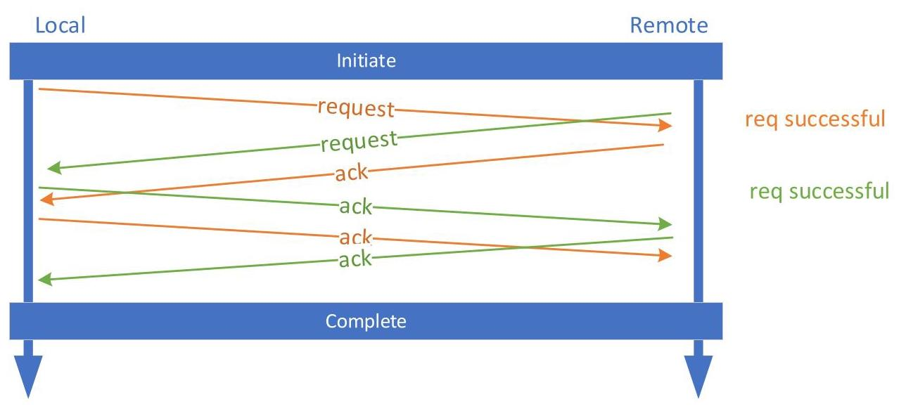
Figure 6-16 Identical Request Flow
图 6-16 相同请求流
6.4.3.2 DL Channel Online/Offline Negotiation Message
The format is shown below. These messages are used to negotiate the Channel offline and online. By default, all Channels are offline after reset.
格式如下所示。这些消息用于协商通道的离线和在线状态。默认情况下，复位后所有通道均处于离线状态。
The Following Channel are defined:
定义了以下通道：
- Channel 0: TL Flits
- 通道0：TL flit
- Channel 4: DL UART
- 通道4：数据链路层UART
When a Channel is offline it shall not transmit data associated with that Channel. Received Channel data that are offline is silently discarded. When Channel 0 is offline, transmitted DL Flits shall have the TL Flit[1:0] set to 0 in the segment header. When Channel 4 is offline, transmitted DL Flits shall not have mtype set to 0b0001 in alternative sectors, i.e., UART Messages.
当通道离线时，它不得发送与该通道关联的数据。接收到的离线通道数据会被静默丢弃。当通道 0 离线时，发送的 DL Flit 应在分段头部中将 TL Flit[1:0] 设置为 0。当通道 4 离线时，发送的 DL Flit 不得在替代扇区中将 mtype 设置为 0b0001，即 UART 消息。
There are only two states online and offline, thus it is not possible to have conflicting requests from each link partner. Requests for the current state are not permitted. If a request is received for the current state, it is Ack'd, and an error is logged by the link partner that received the request.
仅存在在线（online）与离线（offline）两种状态，因此不可能出现来自各链路伙伴的冲突请求。不允许对当前状态发起请求。若收到对当前状态的请求，将予以确认（Ack），并由收到该请求的链路伙伴记录一个错误。
When a request is received a response (Ack, Nack, or decision pending) shall be transmitted within 1.0 us. When a request is received for a Channel online (and the current state is offline for that Channel) the response shall be Ack or decision pending. The link partner that responded with decision pending to an online request shall transmit a request for Channel online with in \({10}\mathrm{\;{ms}}\) . When a request is received for a Channel offline (and the current state is online for that Channel) the response shall be Ack.
当收到请求时，应在 1.0 μs 内发送响应（确认、否认或决策待定）。当收到通道上线请求（且该通道当前状态为离线）时，响应应为确认或决策待定。对上线请求做出决策待定响应的链路伙伴，应在 \({10}\mathrm{\;{ms}}\) 内发送通道上线请求。当收到通道下线请求（且该通道当前状态为在线）时，响应应为确认。
When the Channel.Command field is Request:
当 Channel.Command 字段为 Request 时：
- Channel.TargetState indicates the desired online/offline state of the transmitting link-partner.
- Channel.TargetState 指示发送方链路伙伴期望的在线/离线状态。
- Channel.Response is reserved and shall be set to 0x0.
- Channel.Response 是保留的，应设置为 0x0。
When the Channel.Command field is decision pending:
当 Channel.Command 字段为 decision pending 时：
Data Link
本规范章节定义了 UALink 协议的数据链路层，它位于事务层与物理层之间。其主要功能是将 64 字节的事务层（TL）微片打包为 640 字节的数据链路（DL）微片进行传输，并在接收时解包。DL 层提供带内消息服务用于链路管理，可实现诸如通告 TL 时钟速率、查询设备与端口 ID 以及协商通道状态等功能。其中包含一种类似 UART 的机制用于固件通信，并采用基于信用的流控来防止缓冲区溢出。为支持降低内部时钟的节能加速器，定义了发送端调速机制以避免接收端 FIFO 溢出。
链路的可靠性通过重放协议来保证：每个 DL 载荷微片都携带一个序列号和一个 32 位 CRC。接收端对正确接收的微片进行确认；若出现 CRC 错误或序列号乱序，则发出重放请求。发送端维护一个重放缓存以供重传未被确认的微片。微片头部区分显式序列号微片和携带 ACK 或重放请求的命令微片。前向进展通过超时计数器进行监测，错误则通过丢弃损坏微片并将链路转换到安全状态来加以遏制。
DL 链路状态机包含 Fault、Idle、NOP 和 Up 状态，状态迁移由物理层故障、接收到的控制微片或重放超时驱动。总之，数据链路层在提供边带通信和速率适配的同时，确保了 TL 流量的有序、无损交付，构成了 UALink 互连的可靠传输核心。
Ultra Accelerator Link Consortium Inc. (UALink) - UALink_200 Rev 1.0 Specification
超加速器链接联盟公司（UALink）——UALink_200 规范 1.0 版
- Channel.TargetState is reserved and shall be set to \(0\mathrm{x}0\) .
- Channel.TargetState 是保留字段，应设置为 \(0\mathrm{x}0\)。
- Channel.Response is the requested Channel.TargetState that it received from the remote link-partner.
- Channel.Response 是它从远程链路伙伴收到的所请求的 Channel.TargetState。
When the Channel.Command field is Ack or Nack:
当 Channel.Command 字段为 Ack 或 Nack 时：
- Channel.TargetState indicates the desired online/offline state of the transmitting link-partner.
- Channel.TargetState 指示发送端链路伙伴的期望在线/离线状态。
- Channel.Response is the requested Channel.TargetState that it received from the remote link-partner.
- Channel.Response 是从远端链路伙伴接收的所请求的 Channel.TargetState。
| Field | Bit | Description |
| Compressed | 0 | Set to 0, not supported |
| Reserved | 1 | Reserved |
| mclass | 5:2 | Message Class |
| mtype | 8:6 | Message Type |
| Reserved | 15:9 | Reserved |
| Channel.TargetState | 19:16 | 0xxx: Channel offline 1xxx: Channel online xNNN: Channel ID |
| Channel.Command | 23:20 | 0100: Request 0110: Ack 0111: NAck 1000: decision pending others: reserved. |
| Channel.Response | 27:24 | 0xxx: Channel offline 1xxx: Channel online xNNN: Channel ID |
| Reserved | 31:28 | Reserved |
Table 6-8 Channel Negotiation
表6-8 通道协商
6.4.4 UART Messages
6.4.4.1 Protocol Overview
The UART provides a mechanism for sending data across a fraction of the link bandwidth between a UART Transmit Buffer on one end and a UART Receive Buffer on the other end. It is a bidirectional protocol. 32-bits may be sent as an alternative sector every segment. A segment is 1024 bit, thus approximately 3% of the link bandwidth could be utilized for UART Stream Transport Messages.
UART提供了一种在一端的UART发送缓冲区与另一端的UART接收缓冲区之间，利用一小部分链路带宽发送数据的机制。这是一种双向协议。每个段中可以发送一个32比特的替代扇区。一个段为1024比特，因此大约3%的链路带宽可用于UART流传输消息。
The UART Stream Transport Message has variable length, and the length is indicated in the first DWord of the UART Stream Transport Message. The First DWord is not stored in the UART Transmit Buffer or UART Receiver Buffer. The length of the UART Stream Transport Message is determined dynamically as a function of available credits and UART Transmit Buffer fill. Subsequent Dwords are the message data and is stored in the UART Transmit Buffer and UART Receiver Buffer.
UART 流传输消息的长度是可变的，其长度在 UART 流传输消息的首个双字（DWord）中指明。首个双字不存储在 UART 发送缓冲区或 UART 接收缓冲区中。UART 流传输消息的长度根据可用信用量和 UART 发送缓冲区的填充情况动态确定。后续双字为消息数据，存储在 UART 发送缓冲区和 UART 接收缓冲区中。
Ultra Accelerator Link Consortium Inc. (UALink) - UALink_200 Rev 1.0 Specification
超加速器链路联盟公司（UALink）- UALink_200 修订版 1.0 规范
本规范章节定义了UALink协议的数据链路层，其位于事务层与物理层之间。其主要功能是将64字节的事务层（TL）flit打包为640字节的数据链路（DL）flit进行发送，并在接收时将其解包。DL为链路管理提供带内消息服务，可实现诸如通告TL时钟频率、查询设备及端口ID以及协商通道状态等功能。其中包含一种UART风格的机制用于固件通信，并采用基于信用的流量控制来防止缓冲区溢出。为支持通过降低内部时钟来节省功耗的加速器，定义了发送器调速机制，以避免接收器FIFO溢出。
链路可靠性通过重放协议来保障：每个DL净荷flit均携带一个序列号与一个32位CRC。接收器对正确接收的flit进行确认；若发生CRC错误或序列号出现失序，则发出重放请求。发送器维护一个重放缓冲区，以重传未被确认的flit。flit头部区分了显式序列号flit与携带ACK或重放请求的命令flit。前向进度通过超时计数器进行监控，并通过丢弃损坏的flit以及将链路转换至安全状态来遏制错误。
DL链路状态机包含故障、空闲、NOP和Up状态，其状态转换由物理层故障、接收到的控制flit或重放超时驱动。总体而言，数据链路层确保了TL流量的有序、无损交付，同时提供边带通信与速率适配，从而构成UALink互连的可靠传输核心。
The recommended UART Transmit Buffer and UART Receive Buffer is 128 Dwords each, per stream. Currently a single stream is defined, however there is provision for up to 8 streams in the stream ID fields.
推荐的 UART 发送缓冲区和 UART 接收缓冲区为每流各 128 个双字。目前仅定义单个流，但在流 ID 字段中预留了最多 8 个流的支持。
6.4.4.1.1 Initialization
The initial state of the UART Transmit Buffer and UART Receive Buffer shall be empty. Channel 4 shall be enabled prior to operation. The initial state of the transmit and receive credit counters shall be 0 , i.e., the transmitter has no credits to send data.
UART 发送缓冲区和 UART 接收缓冲区的初始状态应为空。通道 4 应在操作前启用。发送和接收信用计数器的初始状态应为 0，即发送方没有用于发送数据的信用。
6.4.4.1.2 Stream Reset
The stream reset sequence is described below:
流重置序列描述如下：
- Local F/W determines a UART stream reset is required.
- 本地固件确定需要进行 UART 流重置。
- The UART stream is disabled.
- UART 流被禁用。
- The UART Transmit Buffer and UART Receive Buffers for the affected stream is flushed.
- 受影响流的 UART 发送缓冲区和 UART 接收缓冲区被清空。
- The credit counts for the disabled stream are reset to \(0 \times 0\) .
- 对于已禁用的流，信用计数重置为 \(0 \times 0\)。
- Any subsequent writes to the disabled UART Transmit Buffer are discarded.
- 对已禁用的UART发送缓冲区的任何后续写入都将被丢弃。
- Any subsequent receive data from the link partner for the disabled stream is discarded. Error reporting on these discards are suppressed pending the completion of the reset handshake
- 来自链路对端且针对已禁用流的任何后续接收数据都将被丢弃。在重置握手完成之前，针对这些丢弃的错误报告将被抑制。
- all DL messages (all classes, all types) are blocked to prevent further pollution.
- 所有数据链路层（DL）消息（所有类别、所有类型）均被阻塞，以防止进一步污染。
- 40 DL No-Op Messages are transmitted to ensure run-out of any existing UART Stream Transport Message
- 传输 40 条 DL 无操作消息，以确保耗尽任何现有的 UART 流传输消息。
- A UART Stream Reset Request Message is transmitted.
- 发送 UART 流重置请求消息。
- DL messages (all classes, all types) are unblocked to allow forward progress.
- DL 消息（所有类别、所有类型）均被解除阻塞，以允许向前推进。
- Wait for UART Stream Reset Response with status = SUCCESS
- 等待 UART 流重置响应，状态为 SUCCESS
a. After a 10ms timeout, if a Reset Response with status = SUCCESS is not returned, loop back to step (7)
a. 在10毫秒超时后，如果未返回状态为 SUCCESS 的复位响应，则返回到步骤(7)。
- Normal operation resumes
- 恢复正常操作
The Remote link partner that receives the UART Stream Reset Request Message performs the following sequence:
接收UART流重置请求消息的远端链路对端执行以下序列：
- The UART stream is disabled.
- UART流已禁用。
- The UART Transmit Buffer and UART Receive Buffers for the affected stream is flushed.
- 受影响的流的 UART 发送缓冲区和 UART 接收缓冲区被刷新。
- The credit counts for the disabled stream are reset to \(0\mathrm{x}0\) .
- 被禁用流的信用计数重置为 \(0\mathrm{x}0\) 。
- Any subsequent writes to the disabled UART Transmit Buffer are discarded.
- 对已禁用的UART发送缓冲区的任何后续写入都将被丢弃。
- A UART Stream Reset Response Message is transmitted with status = SUCCESS.
- 发送一条UART流复位响应消息，其状态为SUCCESS。
- Normal operation resumes.
- 恢复正常运行。
6.4.4.1.3 Flow Control
Flow control is managed by two modulo \(2\hat{} {12}\) Credit Counters, per direction one in the receiver (Receiver Credit Counter) and one in the transmitter (Transmit Credit Counter). During initialization both counters are set to 0x0. Each count value represents a DWord.
流控制由两个模 \(2\hat{} {12}\) 的信用计数器管理，每方向各一个，位于接收器（接收器信用计数器）和发送器（发送信用计数器）。在初始化期间，两个计数器均设为 0x0。每个计数值代表一个 DWord。
The Receiver Credit Counter rules are described below.
接收方信用计数器的规则如下所述。
- Receiver Credit Counter is initialized to 0 during reset.
- 接收方信用计数器在复位期间初始化为0。
- When reset is released Receiver Credit Counter is updated to the size of the UART Receiver Buffer.
- 当复位释放时，接收方信用计数器被更新为UART接收缓冲区的大小。
Ultra Accelerator Link Consortium Inc. (UALink) - UALink_200 Rev 1.0 Specification
超级加速器链路联盟 (UALink) - UALink_200 Rev 1.0 规范
- When a DWord is read out of UART Receive Buffer, the Receiver Credit Counter is incremented by 1.
- 当从UART接收缓冲区读出一个DWord时，接收方信用计数器递增1。
- If Channel 4 is enabled, then a UART Stream Credit Update is scheduled for transmission with the Receiver Credit Counter value in the DataFCSeq field under the following conditions:
- 如果通道4已启用，则在以下条件下，将安排发送一个UART流信用更新，其中DataFCSeq字段携带接收方信用计数值：
- No UART Stream Credit Update have been scheduled since reset.
- 自复位以来，尚未调度任何 UART 流信用更新。
- When Receiver Credit Counter is incremented, and 4 Flits have been Transmitted.
- 当接收端信用计数器递增，且已传输 4 个 Flit 时。
The Transmit Credit Counter rules are described below.
发送信用计数器规则如下所述。
- Transmit Credit Counter is initialized to 0 during reset.
- 传输信用计数器在复位期间初始化为 0。
- The Transmit Credit Counter is updated every time a UART Stram Transport Message is sent.
- 发送信用计数器在每次发送 UART Stram 传输消息时更新。
A UART Stream Transport Message shall be scheduled when all the following are true:
当所有以下条件均满足时，应调度 UART 流传输消息：
- Channel 4 is enabled.
- 启用通道4。
- The UART Transmit Buffer has a DWord or more in it.
- UART 发送缓冲区中包含一个或多个 DWord。
- The most recently received DataFCSeq field from the UART Stream Credit Update minus the local Transmit Credit Counter, using modulo 2^12 subtraction, is greater than 0 . This indicates that there is room in the UART Receive Buffer.
- 最近从UART流信用更新接收到的DataFCSeq字段减去本地发送信用计数器（使用模2^12减法）的结果大于0，这表示UART接收缓冲区中有空间。
The length field of the UART Stream Transport Message is set to the minimum of:
UART 流传输消息的长度字段设置为以下的最小值：
- The result of the modulo subtraction above minus 1
本规范章节定义了UALink协议的数据链路层，位于事务层与物理层之间。其主要功能是将64字节的事务层（TL）微片封装为640字节的数据链路层（DL）微片用于发送，并在接收时将其解包。数据链路层提供一种带内消息服务用于链路管理，能够实现诸如通告TL时钟速率、查询设备与端口ID以及协商信道状态等功能。其中包含一个UART式机制，用于固件通信，并采用基于信用的流控制以防止缓冲区溢出。为支持降低其内部时钟以节省功耗的加速器，定义了发送器步进调速机制，以避免接收器FIFO溢出。
链路可靠性通过一种重放协议来保证：每个DL净荷微片都携带一个序列号和一个32位CRC。接收端确认正确接收的微片；若发生CRC错误或序列号乱序，则发出重放请求。发送端维护一个重放缓冲区，用于重传未确认的微片。微片头部区分显式序列号微片与携带ACK或重放请求的命令微片。通过超时计数器监控前向进展，并在丢弃损坏微片并将链路转换到安全状态的情况下遏制错误。
数据链路层状态机包括故障、空闲、NOP和正常运行状态，其状态转移受物理层故障、接收到的控制微片或重放超时驱动。总之，数据链路层在保证事务层流量有序、无丢失交付的同时，提供边带通信与速率适配，从而构成了UALink互连架构中可靠传输的核心。
- The UART Transmitter Buffer fill minus 1
- UART 发送器缓冲区填充值减 1
- 32 minus 1
- 32 减 1
6.4.4.1.4 Vendor Defined Packet TLV
There is no relationship between the UART Stream transport Message length and the Length of the Vendor Defined Packet. Shown below illustrates a Vendor Defined Packet [i] that spans 3 UART Stream Transport Messages. The first DWord of the Vendor Defined Packet shown below, is a TL describing the Type and Length of Vendor Defined Packet, the subsequent 3 Dwords V[2:0] describe the Value of the message.
UART流传输消息的长度与供应商定义的数据包长度之间没有关联。下面展示了一个横跨3条UART流传输消息的供应商定义数据包[i]。该供应商定义数据包的第一个双字是描述供应商定义数据包类型和长度的TL，后续的3个双字V[2:0]则描述了消息的值。
UART stream transport message #1
UART 流传输消息 #1
UART stream transport message #2
UART 流式传输消息 #2
UART stream transport message #3
UART 流传输消息 #3
L=3 V5 V6 TL L=2 V0 V1
L=3 V5 V6 TL L=2 V0 V1
| L=3 | V2 | TL | V0 |
Vendor Defined Packet [i]
厂商定义数据包 [i]
Figure 6-17 Vendor Defined Packet
图 6-17 供应商定义的数据包
The first DWord of the Vendor Defined Packet is described below.
厂商定义数据包的第一个双字描述如下。
| Field | Bit | Description |
| Length | 7:0 | Payload Length -1 0x00: payload length = 1 DWord 0XFF: payload length = 256 DWords |
Data Link
数据链路
Ultra Accelerator Link Consortium Inc. (UALink) - UALink_200 Rev 1.0 Specification
超加速器链路联盟公司（UALink） - UALink_200 Rev 1.0 规范
| Type | 15:8 | Message type |
| Vendor ID | 31:16 | The vendor ID assigned by the PCI-SIG to the vendor that defined this packet, or 0xFFFF for UALink defined packet. |
Table 6-9 Vendor Defined Packet Type Length (TL) DWord
表 6-9 供应商定义的数据包类型长度（TL）双字
6.4.4.2 UART Stream Reset Request
The UART Stream Reset Request message is shown below. This is sent to initiate a reset sequence, either for a single stream, or all streams.
UART 流重置请求消息如下所示。发送此消息以启动重置序列，可以是针对单个流，也可以是所有流。
| Field | Bit | Description |
| Compressed | 0 | Set to 0, not supported |
| Reserved | 1 | Reserved |
| mclass | 5:2 | Message Class |
| mtype | 8:6 | Message Type |
| Stream ID | 11:9 | 000: stream 0 others reserved |
| allStreams | 12 | 0: only stream indicated 1: all streams |
| Reserved | 31:13 | Reserved |
Table 6-10 UART Stream Reset Request
表6-10 UART流复位请求
6.4.4.3 UART Stream Reset Response
The UART Stream Reset Response message is shown below. This is sent to report the status of a reset sequence, either for a single stream, or all streams.
UART流复位响应消息如下所示。该消息用于报告复位序列的状态，可以是针对单个流，也可以是所有流。
| Field | Bit | Description |
| Compressed | 0 | Set to 0, not supported |
| Reserved | 1 | Reserved |
| mclass | 5:2 | Message Class |
| mtype | 8:6 | Message Type |
| Stream ID | 11:9 | 000: stream 0 others reserved |
| allStreams | 12 | 0: only stream indicated 1: all streams |
| Status | 15:13 | 000: success others reserved |
| Reserved | 31:16 | Reserved |
Table 6-11 UART Stream Reset Response
表 6-11 UART 流重置响应
6.4.4.4 UART Stream Transport Message
The UART Stream Transport Message is shown below. The UART Stream Transport Message is transmitted a DWord at a time via 32-bits per segment. The message length is specified in Dwords as indicated. The maximum length of the payload is 32 DWords. The maximum length of the transport message is 33 Dwords. The UART Stream Transport Message shall be transmitted continuously, i.e., without another DL messages inserted between any of the UART Stream Transport Message Dwords.
UART 流传输消息如下所示。UART 流传输消息通过每段 32 位的方式，一次传输一个 DWord。消息长度按指示以 DWord 为单位指定。有效载荷的最大长度为 32 个 DWord。传输消息的最大长度为 33 个 DWord。UART 流传输消息应连续传输，即，不得在任何 UART 流传输消息的 DWord 之间插入其他 DL 消息。
| Field | Bit | Description |
| Compressed | 0 | Set to 0, not supported |
| Reserved | 1 | Reserved |
| mclass | 5:2 | Message Class |
| mtype | 8:6 | Message Type |
| Stream ID | 11:9 | 000: stream 0 others reserved |
| Reserved | 26:12 | Reserved |
| Length | 31:27 | Length of payload +1 DWords, i.e. length = 0 means 1 DWord payload. |
| DWord payload 0 | 63:32 | First payload DWord |
| DWord payload 1 | 95:64 | Second payload DWord, if needed. |
| DWord payload n | (n+2)*32- 1:(n+1)*32 | N'th payload DWord, if needed. |
Table 6-12 UART Stream transport message
表 6-12 UART 流传输消息
6.4.4.5 UART Stream Credit Update
The UART Stream Credit Update message is shown below. This is used to advertise credit availability from receiver to transmitter.
UART 流信用更新消息如下所示。该消息用于从接收方向发送方通告信用可用性。
| Field | Bit | Description |
| Compressed | 0 | Set to 0, not supported |
| Reserved | 1 | Reserved |
| mclass | 5:2 | Message Class |
| mtype | 8:6 | Message Type |
| Stream ID | 11:9 | 000: stream 0 others reserved |
| Reserved | 19:12 | Reserved |
| DataFCSeq | 31:20 | Data flow control sequence update. |
Table 6-13 UART Stream Credit Update
表 6-13 UART 流信用更新
6.5 Transmitter Pacing
6.5.1 Overview
The transaction buffers are in the TL, and credit-based flow control guarantees that there is always room in the receive TL buffers. The TL is clocked by the UPLI Clock. Accelerators are permitted to change their UPLI Clock to a lower frequency such that its throughput is lower than the physical layer throughput.
事务缓冲区位于事务层（TL）中，基于信用的流控制保证接收TL缓冲区始终有空间。TL由UPLI时钟驱动。允许加速器将其UPLI时钟更改为较低频率，使得其吞吐量低于物理层吞吐量。
Note: Changing to a lower clock frequency is a power reduction mechanism often used in accelerators and CPUs.
注意：降低时钟频率是加速器和CPU中常用的一种功耗降低机制。
Transmitter Pacing is required on the transmitting device to prevent the DL Rx FIFO overflow on the receiving device, when the receiving UPLI Clock is operating at a lower frequency. The Rx FIFO is written at a rate derived from the recovered clock. This rate is \({800}\mathrm{{Gb}}/\mathrm{s}\) by default and is implemented as 512-bits (64-byes) at 1562.5MHz = 800Gb/s. The read rate could be slower if the UPLI Clock has been reduced, thus causing the Rx FIFO to fill up.
当接收端UPLI时钟工作在较低频率时，发送设备需要进行发送器调速，以防止接收设备上的DL Rx FIFO溢出。Rx FIFO的写入速率取自恢复时钟。此速率默认为\({800}\mathrm{{Gb}}/\mathrm{s}\)，并以1562.5MHz下的512比特（64字节）实现，即800Gb/s。如果UPLI时钟降低，则读取速率可能更慢，从而导致Rx FIFO填满。
Pacing is defined as the rate that a Tx Flit from the TL is admitted to the DL Tx FIFO. The DL modulates at "Ready" signal to the TL indicating on which of the clock ticks' data may transfer.
调步定义为来自事务层的发送微片被允许进入数据链路层发送 FIFO 的速率。数据链路层通过“就绪”信号向事务层指示在哪些时钟节拍上可以传输数据。
- Note: The "ready" signal is one possible implementation, others are possible. This is for illustration purposes only.
- 注：“ready”信号是一种可能的实现方式，其他方式亦可。此处仅用于说明目的。
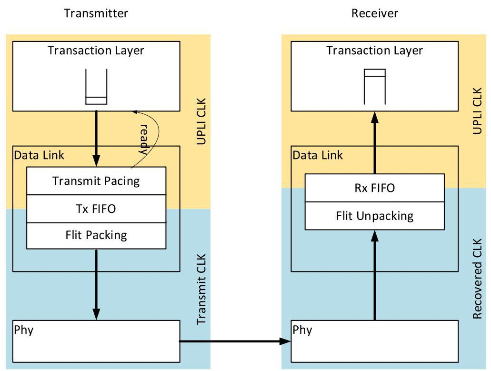
Figure 6-18 Pacing
图 6-18 步速控制
6.5.2 Switch
Switches are required to run at a fixed UPLICLK, such that the throughput is 800Gb/s, 512-bits at 1562.5MHz. If the Accelerator changes its UPLICLK it sends a TL Rate Notification Message to the Switch. The Switch adjusts the transmit pacing rate to avoid Rx FIFO overflows in the accelerator based on receiving this message.
交换机需要以固定的 UPLICLK 运行，使得吞吐量为 800Gb/s，即 1562.5MHz 下的 512 位。如果加速器更改其 UPLICLK，它会向交换机发送一条 TL 速率通知消息。交换机根据接收到的此消息调整发送 pacing 速率，以避免加速器中的接收 FIFO 溢出。
6.5.3 Accelerator
Accelerators are permitted to change their UPLI Clock. If the Accelerator intends to change its UPLI Clock it shall inform its link partner of this via TL rate notification messages . It is permitted to have both accelerators on a link operating at different rates. It is permitted that accelerators independently changing their rates at the same time.
加速器允许更改其 UPLI 时钟。若加速器意图更改其 UPLI 时钟，应通过 TL 速率通知消息告知其链路对端。允许同一链路上的两个加速器以不同速率运行。允许加速器同时独立更改其速率。
6.5.4 Sequence
The following rules apply to UPLI Clock rate change:
以下规则适用于 UPLI 时钟速率变更：
- Default rate is \({800}\mathrm{G}\) bits \(/\mathrm{s}\) or \({1562.5}\mathrm{{MHz}}\) .
- 默认速率为 \({800}\mathrm{G}\) 比特 \(/\mathrm{s}\) 或 \({1562.5}\mathrm{{MHz}}\) 。
- Only Accelerators may change their UPLI Clock frequency.
只有加速器可以改变其UPLI时钟频率。
- Changing the UPLI Clock frequency requires reprograming a PLL, therefore an intermediate UPLI Clock frequency between rates changes shall be to the reference clock of 156.25MHz. Switching between PLL derived clock and 156.25 MHz reference clock is performed with a glitchless clock mux.
- 更改 UPLI 时钟频率需要重新编程 PLL，因此在速率切换期间，中间 UPLI 时钟频率应切换至 156.25MHz 的参考时钟。通过无毛刺时钟多路复用器实现 PLL 衍生时钟与 156.25MHz 参考时钟之间的切换。
- When an accelerator intends to change its UPLI Clock frequency:
- 当加速器打算改变其 UPLI 时钟频率时：
a. Adjust its Tx pacing to the reference clock rate.
a. 根据参考时钟速率调整其发送步调。
b. Transmit a TL Rate Notification Message for the reference clock rate.
b. 发送一条针对参考时钟速率的 TL 速率通知消息。
c. Wait for TL Rate Notification Message ACK.
c. 等待TL速率通知消息ACK。
d. Mux its UPLI Clock to the reference clock.
d. 将其UPLI时钟多路复用到参考时钟。
e. Adjust its PLL for the to the new UPLI Clock frequency.
e. 调整其 PLL 以适应新的 UPLI 时钟频率。
f. Mux its UPLI Clock to the new PLL frequency, with Tx pacing set to the link partner's rate if it has a lower UPLI Clock rate.
f. 将其 UPLI 时钟切换至新的 PLL 频率，若链路伙伴的 UPLI 时钟速率较低，则将发送调速设置为该伙伴的速率。
g. Transmit a TL Rate Notification Message for the new clock rate.
g. 发送新时钟速率的 TL 速率通知消息。
h. Wait for TL Rate Notification Message ACK.
h. 等待TL速率通知消息ACK。
i. Done.
i. 完成。
- When a link partner receives a TL rate notification message:
- 当链路伙伴收到TL速率通知消息时：
a. It registers this value.
a. 它记录此值。
b. It adjusts its Tx pacing if needed (i.e., link partner has advertised a lower rate).
b. 如果需要（即链路伙伴通告了较低的速率），它会调整其发送节拍。
c. Transmits with a TL Rate Notification Message ACK within 1.0 us.
c. 在1.0微秒内发送TL速率通知消息的确认（ACK）。
d. Done.
本规范章节定义了UALink协议的数据链路层，该层位于事务层与物理层之间。其主要功能是将64字节的事务层（TL）微片组装成640字节的数据链路（DL）微片用于发送，并在接收时进行解包。数据链路层提供带内消息服务以支持链路管理，从而实现通告TL时钟频率、查询设备与端口标识符以及协商通道状态等功能。其中包含一个类似UART的机制用于固件通信，并采用基于信用的流量控制以防止缓冲区溢出。为支持降低内部时钟的节能加速器，定义了发送端调速机制，以避免接收端FIFO溢出。
链路可靠性通过重放协议保障：每个数据链路层有效载荷微片都携带序列号与32位CRC。接收方确认正确接收的微片；若发生CRC错误或序列号失序，则发出重放请求。发送方维护重放缓冲区以重传未被确认的微片。微片头部区分显式序列号微片与携带ACK或重放请求的命令微片。通过超时计数器监控前向进展，并通过丢弃损坏微片并将链路转至安全状态来遏制错误。
数据链路层链路状态机包含故障、空闲、NOP和运行状态，其转换由物理层故障、接收到的控制微片或重放超时触发。总之，数据链路层在提供带外通信与速率适配的同时，确保事务层流量的有序、无损交付，从而构成UALink互连的可靠传输核心。
6.6 Link Level Replay
6.6.1 Overview
Link level replay ensures guaranteed in order delivery of DL Flits in the presence of bit errors that cannot be corrected by the physical layer FEC. The Transmitter keeps a copy of payload Flits (i.e., not NOP Flits), until the receiver positively acknowledges them. The unacknowledged Flits are stored in the TxReplay buffer. The TxReplay buffer shall be large enough to cover the round-trip time (RTT) of the link otherwise the link will not be able to run at full bandwidth. If the TxReplay buffer is full, waiting for positive acknowledgments (ACKs), new DL payload Flits shall not be transmitted. In their place NOP Flits are transmitted. If the TxReplay buffer is full or in a replay state, the DL shall back pressure the TL and not accept any additional TL Flits and ensure that no accepted TL Flits are lost.
链路级重放保证在物理层前向纠错无法纠正的比特错误存在的情况下，数据链路层微片仍能实现保证的有序交付。发送端会保留包含有效载荷微片（即空操作微片除外）的副本，直到接收端对其进行肯定确认。未确认的微片存储在发送重放缓冲区中。发送重放缓冲区必须足够大，以涵盖链路的往返时间，否则链路将无法以全带宽运行。如果发送重放缓冲区已满，正在等待肯定确认，则不得传输新的数据链路层有效载荷微片，而是代之以空操作微片。当发送重放缓冲区已满或处于重放状态时，数据链路层应对事务层施加反压，不再接受任何额外的事务层微片，并确保不丢失任何已接受的事务层微片。
The PCS Receiver performs FEC correction prior to forwarding the Flit to the DL, only Flits that pass FEC correction are forwarded to the DL. The CRC is check in the DL. If the CRC fails, then the DL Flit is deemed bad, and the Flit is discarded.
PCS 接收器在将 Flit 转发至 DL 之前会进行 FEC 纠错，仅通过 FEC 纠错的 Flit 才会被转发到 DL。CRC 校验在 DL 中进行，若 CRC 校验失败，则认定该 DL Flit 有误并将其丢弃。
If the CRC is good, then one of the following occur: a standard replay is scheduled by the Receiver via a Replay Request when the receiver determines the received sequence numbers are out of order or an Ack is scheduled when the receiver determines the received sequence numbers are in order.
如果CRC校验正确，则会发生以下情况之一：当接收方判定接收到的序列号失序时，会通过重放请求调度一次标准重放；或者当接收方判定接收到的序列号有序时，会调度一个确认响应。
When the Transmitter receives an Ack the TxReplay buffer removes entries up to and including the sequence number indicated by ackReqSeq field in the Ack. When the Transmitter receives a Standard Replay Request, it starts replaying all DL Payload Flits, currently held in the transmit replay buffer, starting with the sequence number indicated by the ackReqSeq field in the Replay Request. A Replay Request is not an implicit Ack; no entries are removed from the TxReplay buffer when a Replay Request is received.
当发送端收到确认（Ack）时，Tx重放缓冲器会移除确认中 ackReqSeq 字段所指示的序列号及之前的所有条目。当发送端收到标准重放请求（Standard Replay Request）时，它会从重放请求中 ackReqSeq 字段指示的序列号开始，重放当前保存在发送重放缓冲器中的所有 DL 有效载荷微片。重放请求并非隐式确认；收到重放请求时，Tx重放缓冲器中不会移除任何条目。
When Replay Requests are sent, three Replay Requests shall be sent, to improve reliability, all requesting the same sequence number. Upon receiving a new Replay Request, the receiver shall ignore subsequent Replay Requests during the Replay Request Ignore Window. The three copies of the Replay Request shall be issued as quickly as possible such that no more than one copy of the Replay Request will be sent in each FEC-interleave group.
当发送重传请求时，应发送三个重传请求以提高可靠性，所有请求均针对相同的序列号。在接收到一个新的重传请求后，接收方应在重传请求忽略窗口期间忽略后续的重传请求。应尽快发出这三个重传请求副本，以使每个 FEC 交织组中最多发送一个重传请求副本。
- Note: this ensures that the loss of any one FEC-interleave group will result in the loss of no more than one copy of the Replay Request.
- 注意：这确保了任何一个FEC交错组的丢失将导致不超过一个重放请求副本的丢失。
There are two formats for Flit headers:
Flit 头有两种格式：
- Explicit Sequence Number Flit: this Flit carries the full 9-bit sequence number, but no information regarding Ack or Replay Request
- 显式序列号微片：此微片携带完整的 9 位序列号，但不包含关于确认或重放请求的信息。
- Command Flit: this Flit carries only the lower 3-bits of the sequence number, as well as Ack or Replay Request indication, and the full 9-bit sequence number that is being Acked or replay requested.
- 命令Flit：该Flit仅携带序列号的低3位，以及确认（Ack）或重播请求指示，以及被确认或请求重播的完整9位序列号。
When a Command Flit is received, the full 9-bit sequence number can generally be calculated based on previously received full 9-bit sequence number (Explicit Flit), and subsequent 3-bit sequence numbers (command Flit). The receiver performs checks to ensure that this can be calculated unambiguously. If the sequence number cannot be unambiguously determined a replay is triggered. The transmitter schedules Explicit Flits every 7 Flits to aid the calculation being unambiguous.
当接收到一个命令 Flit 时，通常可以根据先前接收到的完整 9 位序列号（显式 Flit）以及随后的 3 位序列号（命令 Flit）计算出完整的 9 位序列号。接收方会执行检查，以确保能够无歧义地完成这一计算。若无法无歧义地确定序列号，则会触发重放。发送方每 7 个 Flit 调度一次显式 Flit，以支持计算的无歧义性。
6.6.2 Flit Header
6.6.2.1 Explicit Sequence Number Flit Header
The Explicit Sequence Number Flit (or "Explicit Flit" for short) header is shown below. This contains the full 9-bit sequence number. There is no Ack or Replay Request indication.
显式序列号微片（或简称“显式微片”）头部如下所示。其中包含完整的 9 位序列号。没有 Ack 或 Replay Request 指示。
| Field | Bit | Description |
| op | 23:21 | When payload ==0 (NOP): 0b000: NOP Flit others: Reserved When payload ==1: 0b000: Original transmission of payload Flit "org" 0b001: Replay of payload Flit "rpy" others: Reserved |
| payload | 20 | 1: payload Flit 0: NOP Flit |
| reserved | 19:17 | Reserved |
Data Link
数据链路
| flitSeqNo | 16:8 | Sequence number of Flit. This is the full 9-bit value. |
| reserved | 7:0 | Reserved |
Table 6-14 Explicit Sequence Number Flit Header
表 6-14 显式序列号微片头部
6.6.2.2 Command Flit Header
The Command header is shown below. This contains the full 9-bit sequence number for the Flits that is being acknowledged or not acknowledged, along with the lower 3-bits of the flitSeqNo, identified as flitSeqLo.
命令头如下所示。其中包含正在被确认或未确认的Flits的完整9位序列号，以及被标识为flitSeqLo的flitSeqNo的低3位。
| Field | Bit | Description |
| op | 23:21 | 0b010: Ack 0b011: Standard Replay Request "rpy" others: Reserved |
| payload | 20 | 1: payload Flit 0: NOP Flit |
| ackReqSeq | 19:11 | Full sequence number of Ack Flit that is being acknowledged or Sequence number of the Replay Request. This is the full 9-bit value. |
| flitSeqLo | 10:8 | Lower 3 bits of Flit Sequence Number. |
| reserved | 7:0 | Reserved |
Table 6-15 Command Flit Header
表 6-15 命令微片头部
6.6.3 Term Definitions
6.6.3.1 Explicit Sequence Number Flit
A Payload Flit with op equal to 0b000 or 0b001. A NOP Flit with op 0b000. This uses the format described in Table 6-14. Explicit Flits contain the full 9-bit sequence number.
操作码等于0b000或0b001的有效载荷微片，以及操作码为0b000的NOP微片。这使用了表6-14中描述的格式。显式微片包含完整的9位序列号。
6.6.3.2 Command Flit
A payload or NOP Flit with op equal 0b010 or 0b011. In other words, an Ack or Replay Request Flit.
带有等于 0b010 或 0b011 的操作码的有效载荷或 NOP Flit。换句话说，即确认（Ack）或重放请求（Replay Request）Flit。
6.6.3.3 Ack Flit
A Flit with Replay op 0b010. This uses the format described in Table 6-15.
一个操作码为 0b010 的重放微片。它使用表 6-15 中描述的格式。
6.6.3.4 Standard Replay Request Flit
A Flit with Replay op 0b011. This uses the format described in Table 6-15.
具有 Replay 操作码 0b011 的 Flit。这使用表 6-15 中描述的格式。
6.6.3.5 Standard Replay Request
A Replay Request that requests a replay of all DL Payload Flits starting from a specified sequence number.
一种请求从指定序列号开始重放所有 DL 有效载荷微片的重放请求。
6.6.3.6 Tx Replay Buffer
The buffer which stores information for transmitted DL Payload Flits until the DL Payload Flit has been acknowledged by the Link partner.
存储已发送的 DL 有效载荷微片的信息，直到该 DL 有效载荷微片被链路对端确认为止的缓冲区。
6.6.3.7 Rx Replay Buffer
The buffer which stores information for received DL Payload Flits, until the DL Payload Flit has been released to and consumed by the Receiver.
该缓冲区用于存储所接收到的 DL 有效负载微片（DL Payload Flits）的信息，直至该 DL 有效负载微片被释放给接收器并被其消耗。
6.6.3.8 Replay Request Ignore Window
A time window in which received Replay Request Flits are ignored so that only a single replay action will be triggered from the multiple copies of the Replay Request that were issued.
一个时间窗口，在此期间接收到的重放请求微片会被忽略，从而确保仅从已发出的多个重放请求副本中触发一次重放操作。
6.6.4 Rx Flags and Counters
6.6.4.1 Rx_seq_calc
This 9-bit value is calculated based on the received Flit. Command or Explicit header type as follows.
此9位值根据接收的Flit的Command或Explicit头类型计算得出，如下所示。
If Flit is an Explicit Flit:
如果 Flit 是显式 Flit：
- Rx_seq_calc = flitSeqNo
- Rx_seq_calc = flitSeqNo
Else: # Command Flit
否则： # 命令微片
- delta_lo = (flitSeqLo - Rx_last_seq_calc & 0x7) % 8
- delta_lo = (flitSeqLo - Rx_last_seq_calc & 0x7) % 8
If delta_lo == 0 and flit is payload:
如果 delta_lo == 0 且 flit 为有效载荷：
- delta_lo = 8
- delta_lo = 8
- Rx_seq_calc = (Rx_last_seq_calc + delta_lo) % 512
- Rx_seq_calc = (Rx_last_seq_calc + delta_lo) % 512
Default value is 0x1FF.
默认值为 0x1FF。
6.6.4.2 Rx_last_seq_calc
This 9-bit value is updated based on the Rx_seq_calc calculation of the last Flit received. Default value is 0x1FF. See Rx Enqueuing Rules.
该 9 位值根据最后接收到的 Flit 的 Rx_seq_calc 计算结果进行更新。默认值为 0x1FF。请参见“Rx 入队规则”。
6.6.4.3 Rx_last_ack
This 9-bit value is updated based on the ackReqSeq field of the last Ack Flit received. Default value is 0x1FF. See Rx Ack and Replay Request Processing Rules.
此 9 位值根据最后收到的 Ack Flit 的 ackReqSeq 字段进行更新。默认值为 0x1FF。请参见 Rx Ack 和重放请求处理规则。
6.6.4.4 Rx_bad_crc_count
This 3-bit value incremented based receiving Flits with bad CRC. The counter does not roll over and saturates at 0x7. Bad CRC can lead to sequence number ambiguity resulting in a loss of sync between Rx_last_seq_calc at the receiver and the actual sequence number that the Flit was created with. Default value is 0x0. See Rx Ingress Rules.
该 3 位值基于收到带有错误 CRC 的 Flit 而递增。该计数器不会回滚，并在 0x7 处饱和。错误的 CRC 可能导致序列号产生歧义，从而使接收端的 Rx_last_seq_calc 与 Flit 创建时的实际序列号失去同步。默认值为 0x0。请参阅 Rx 入口规则。
6.6.4.5 Rx_unexpected_count
This 8-bit value is incremented based on receiving Flits with unexpected sequence number while the Rx is in the replay state. The counter does not roll over and saturates at \(0\mathrm{{xFF}}\) . Default value is 0x0. See Rx Enqueuing Rules.
这个 8 位值在接收器处于重放状态时，因接收到具有非预期序列号的微片而递增。该计数器不会回绕，饱和于 \(0\mathrm{{xFF}}\) 。默认值为 0x0。请参见 Rx 入队规则。
6.6.4.6 Rx_replay_limit
This 8-bit value set the limit in Flit times that will trigger resending Replay Requests. Default value is 50. This should be set to twice the round-trip latency of the link, in Flit times. See Rx Enqueuing Rules.
该8位值设置了触发重新发送重播请求的微片时间限制。默认值为50。应将其设置为链路往返延迟的两倍，以微片时间为单位。请参阅接收端入队规则。
Ultra Accelerator Link Consortium Inc. (UALink) - UALink_200 Rev 1.0 Specification
超加速器链路联盟公司 (UALink) - UALink_200 Rev 1.0 规范
本章节规范定义了UALink协议中介于事务层与物理层之间的数据链路层。其主要功能是将64字节的事务层（TL）微片打包成640字节的数据链路（DL）微片用于传输，并在接收时进行解包。数据链路层提供带内消息服务用于链路管理，能够实现诸如通告TL时钟速率、查询设备与端口ID以及协商通道状态等功能。其中包含一个类似UART的机制用于固件通信，并采用基于信用的流量控制以防止缓冲区溢出。为支持降低内部时钟频率以实现节能的加速器，定义了发送端调速机制，以避免接收端FIFO溢出。
链路可靠性通过重放协议来保证：每个数据链路层有效载荷微片携带一个序列号和一个32位CRC。接收端确认正确接收的微片；若发生CRC错误或序列号乱序，则会发出重放请求。发送端维护重放缓冲区，以便重新传输未被确认的微片。微片头部区分显式序列号微片和携带ACK或重放请求的命令微片。通过超时计数器监控前向进度，并通过丢弃损坏的微片并将链路转换到安全状态来抑制错误。
数据链路层状态机包括故障、空闲、NOP和建立状态，其转换由物理层故障、接收到的控制微片或重放超时驱动。总体而言，数据链路层确保事务层流量的有序、无损交付，同时提供边带通信与速率适配，构成了UALink互连的可靠传输核心。
6.6.4.7 Rx_ambiguous
This flag indicates if the received flitSeqLo field is ambiguous. This occurs when too many CRC errors occur in a row declaring that future reception of a flitSeqLo field is untrustworthy. Default value is \(0\mathrm{x}0\) . See Rx Ingress Rules.
此标志指示接收到的 flitSeqLo 字段是否模糊不清。当连续发生太多 CRC 错误，导致后续接收到的 flitSeqLo 字段被声明为不可信时，就会出现这种情况。默认值为 \(0\mathrm{x}0\)。请参阅 Rx 入口规则。
6.6.4.8 Rx_replay
This flag indicates if the Rx is in a replay state or not. Default value is \(0\mathrm{x}0\) . See Rx Enqueuing Rules.
该标志指示Rx是否处于重放状态。默认值为\(0\mathrm{x}0\)。请参见Rx入队规则。
6.6.4.9 Rx_replay_ignore_count
This 4-bit value defines the remaining number of flits for which a received Replay Request will be ignored. This counter counts down and saturates at 0x0. Default value is 0x0. See Rx Ingress Rules.
这个 4 位值定义了在接收到重放请求时将被忽略的剩余 flit 数量。该计数器向下计数并在 0x0 处饱和。默认值为 0x0。参见 Rx 入口规则。
6.6.5 Tx Flags and Counters
6.6.5.1 Tx_replay_req_seq_no
This 9-bit value holds the sequence number that will be sent 3 times as replica Replay Requests. Default value is 0x0. See Tx Scheduling.
这个9位值保存序列号，该序列号将作为副本重放请求发送3次。默认值为0x0。请参见Tx调度。
6.6.5.2 Tx_replay_req_count
This 2-bit value indicates how many Replay Requests are left to send. This counter counts down and saturates at 0x0. Default value is 0x0. See Rx Enqueuing Rules and Tx Scheduling.
此2位值指示还剩余多少个重放请求需要发送。该计数器递减计数，并在0x0处饱和。默认值为0x0。请参阅接收入队规则和发送调度。
6.6.5.3 Tx_last_seq
This 9-bit value indicates the last sequence number added to TxReplay. This number is incremented for each payload Flit added to the TxReplay buffer. A 9-bit value is stored in the TxReplay buffer along with the Flit, the transmitted Flit may ultimately use the 3-bit flitSeqLo field for a command Flit. Default value is 0x1FF. See Flit sequence number rules, Rx Ack and Replay Request Processing Rules, and Tx Source Flit Rules.
该9位值指示添加到TxReplay缓冲区的最后一个序列号。每向TxReplay缓冲区添加一个有效载荷Flit，该序号递增一次。在TxReplay缓冲区中，与Flit一起存储一个9位值；所传输的Flit最终可能将3位的flitSeqLo字段用于命令Flit。默认值为0x1FF。请参阅 Flit序列号规则、Rx Ack与重放请求处理规则以及Tx源Flit规则。
6.6.5.4 Tx_replay
This 1-bit value indicates if the Tx is in a replay state or not. Default value is 0x0. See Tx Enqueue Rules and Tx Source Flit Rules.
该1位值指示Tx是否处于重放状态。默认值为0x0。请参见Tx入队规则和Tx源微片规则。
6.6.5.5 Tx_first_replay
This 1-bit value indicates the first Flit of a replay, and it shall be transmitted as an Explicit Sequence Number Flit . Default value is 0x0. See Rx Ack and Replay Request Processing Rules and Tx Scheduling.
该1位值指示重放的首个Flit，且应作为显式序列号Flit进行传输。默认值为0x0。参见Rx确认与重放请求处理规则及Tx调度。
6.6.5.6 Tx_explicit_count
This 3-bit value determines when an Explicit Sequence Number Flit shall be sent. This down counter saturates at 0x0 forcing an Explicit Sequence Number Flit to be sent. Default value is 0x7. See Tx Scheduling.
此3位值决定何时应发送显式序列号微片。该递减计数器在0x0处饱和，强制发送显式序列号微片。默认值为0x7。参见Tx调度。
6.6.5.7 Tx_ack_counter
While unacknowledged DL Payload Flits are present in the Tx Replay Buffer, this 24-bit counter keeps track of the time, in Flit times, waiting since the last received ack . Default value is 0x0. See Tx Forward progress.
当发送重播缓冲区中存在未确认的 DL 有效载荷微片时，此 24 位计数器以微片时间为单位跟踪自上次接收到确认以来的等待时间。默认值为 0x0。请参见发送前进进度。
6.6.5.8 Tx_ack_time_out
This 24-bit register is programed with the threshold for the Tx_ack_counter. Default value is calculated for \(1\mathrm{\;{ms}}\) . With 200AUI-1 Flit time is \({25}\mathrm{\;{ns}}\) , and thus default setting is 40,000. See Tx Forward progress.
该24位寄存器被编程为 Tx_ack_counter 的阈值。默认值根据 \(1\mathrm{\;{ms}}\) 计算得出。在200AUI-1下，Flit时间为 \({25}\mathrm{\;{ns}}\) ，因此默认设置为40,000。请参阅 Tx 前向进度。
6.6.6 General Rules
6.6.6.1 Flit sequence number rules
- Valid Flit Sequence Numbers are 1 to 511, 0 is reserved for future use. 511 wraps to 1. - Any (sequence number expression)%511 implicitly wraps 511 to 1.
- 有效的 Flit 序列号范围为 1 至 511，0 保留供未来使用。511 回绕至 1。
- 任何（序列号表达式）%511 的结果在出现 511 时隐式回绕至 1。
- NOP Flits do not consume a Flit Sequence Number.
- NOP Flit 不消耗 Flit 序列号。
- A NOP Flit uses Tx_last_seq for its sequence number.
- NOP 微片使用 Tx_last_seq 作为其序列号。
- A payload Flit uses Tx_last_seq + 1 for its sequence number when it is added to the TxReplay buffer.
- 当负载微片被添加至TxReplay缓冲区时，它使用Tx_last_seq + 1作为其序列号。
6.6.6.2 Rx Ingress Rules
When an ingress Flit is received:
当收到入口 Flit 时：
- Rx_replay_ignore_count is decremented by 1, saturates at 0x0.
- Rx_replay_ignore_count 减 1，饱和到 0x0。
- If the CRC check passes, then proceed with both:
- 如果 CRC 校验通过，则继续执行以下两项操作：
- Rx Ack and Replay Request Processing Rules and
- 接收确认与重放请求处理规则及
- Rx Enqueuing Rules
- 接收入队规则
- Else # the CRC fails
- 否则 # CRC 校验失败
- Rx_bad_crc_count += 1
- Rx_bad_crc_count 加 1
- If Rx_bad_crc_count >= 7 then set Rx_ambiguous to 1
- 如果 Rx_bad_crc_count >= 7，则将 Rx_ambiguous 设置为 1
- If Rx_replay = 1 then Rx_unexpected_count += 1
- 如果 Rx_replay = 1，则 Rx_unexpected_count 加 1
- Discard Flit
- 丢弃 Flit
- increment CRC error counter
- 递增CRC错误计数器
6.6.6.3 Rx Ack and Replay Request Processing Rules
When an ingress Flit is received that passes CRC Check:
当接收到通过CRC校验的入站Flit时：
- A Command Flit with ackReqSeq equal to 0 is dropped and error is logged.
- ACK 请求序列号为 0 的命令微片将被丢弃并记录错误。
- If both of the following are true:
- 如果以下两个条件均成立：
- The DL Flit is a Replay Request Flit
- DL Flit 是重放请求 Flit
- Rx_replay_ignore_count equals 0x0
- Rx_replay_ignore_count 等于 0x0
Then
本规范章节定义了UALink协议的数据链路层，位于事务层和物理层之间。其主要功能是将64字节的事务层（TL）微片打包成640字节的数据链路层（DL）微片以进行发送，并在接收时将其解包。DL为链路管理提供带内消息服务，能够实现诸如宣告TL时钟速率、查询设备和端口ID以及协商通道状态等功能。内含基于UART风格的机制用于固件通信，并采用基于信用量的流控制以防止缓冲区溢出。为支持降低内部时钟的节能型加速器，定义了发送端调速机制，以避免接收端FIFO溢出。
链路可靠性通过重放协议来保证：每个DL净荷微片携带序列号和32位CRC。接收端确认正确接收的微片；若发生CRC错误或序列号失序，则发出重放请求。发送端维护重放缓冲区，用于重传未确认的微片。微片头部区分携带显式序列号的微片和携带ACK或重放请求的命令微片。通过超时计数器监控前向进展，错误通过丢弃损坏的微片并将链路转换到安全状态来遏制。
DL链路状态机包括Fault（故障）、Idle（空闲）、NOP和Up（正常工作）状态，其转换由物理层故障、接收到的控制微片或重放超时触发。总的来说，数据链路层确保TL流量的有序、无损传递，同时提供边带通信和速率适配，构成了UALink互连的可靠传输核心。
- If both are true:
- 如果两者均为真：
- (ackReqSeq - Rx_last_ack -1)% 511 <=256
- (ackReqSeq - Rx_last_ack -1)% 511 <=256
- (Tx_last_seq - ackReqSeq )%511<=256
- (Tx_last_seq - ackReqSeq )%511<=256
Then
本章规范定义了UALink协议的数据链路层，它位于事务层与物理层之间。其主要功能是将64字节的事务层（TL）微片（flit）打包成640字节的数据链路（DL）微片进行发送，并在接收时将其解包。数据链路层提供带内消息服务用于链路管理，可支持通告TL时钟速率、查询设备与端口ID以及协商通道状态等功能。其中还包含一个类UART的机制用于固件通信，并采用基于信用的流量控制以防止缓冲区溢出。为支持降低内部时钟频率的节能加速器，定义了发送器调速（pacing）机制，以避免接收端FIFO溢出。
链路可靠性通过重放协议来保证：每个数据链路载荷微片都携带一个序列号和一个32位CRC。接收端对正确接收的微片进行确认；若发生CRC错误或序列号乱序，则发出重放请求。发送端维护一个重放缓冲区，用以重传未确认的微片。微片头部区分携带显式序列号的微片和携带ACK或重放请求的命令微片。通过超时计数器监控前向进展，错误则通过丢弃损坏的微片并将链路转换至安全状态来加以控制。
数据链路层的链路状态机包含Fault、Idle、NOP和Up状态，状态转换由物理层故障、接收到的控制微片或重放超时驱动。总体而言，数据链路层在提供边带通信与速率适配的同时，确保事务层流量的有序、无损传递，构成UALink互连的可靠传输核心。
- Set TxReplay to 1
- 将 TxReplay 设置为 1
- Set Tx_first_replay to 1
- 将 Tx_first_replay 设置为 1
- Set Rx_replay_ignore_count to 12
- 将 Rx_replay_ignore_count 设置为 12
- Schedule replay with the ackReqSeq from the received Flit as the next Flit to transmit
- 调度重放，以接收到的 Flit 中的 ackReqSeq 作为下一个要发送的 Flit
Else
Else”
所以，其实用户提供了摘要（英文），然后指令是翻译这个“Markdown paragraph”。但最后用户输入是“Else”。这可能是一个错误。我应该将那个英文摘要视为要翻译的段落。因为系统消息说：“以下是文章全文的摘要，供翻译时参考上下文：” 然后就是英文段落，再然后是指令，最后用户消息说“Else”。这可能意味着用户想让我翻译那个摘要段落，而“Else”可能是多余的。也许用户想让我只翻译这个摘要？不过指令里明确说“Translate the user's Markdown paragraph”，而用户消息是“Else”。但是上下文已经给出了英文摘要，且系统消息说“以下是文章全文的摘要”，所以这很可能就是需要翻译的内容。然后“Else”可能是误输入。为了安全起见，我会将提供的英文摘要翻译成中文。因为指令强调只返回最终翻译，不要解释。所以我会直接把那个英文段落翻译成中文。
摘要英文： This specification chapter defines the Data Link layer for the UALink protocol, positioned between the Transaction and Physical layers. Its main function is to pack 64-byte Transaction Layer (TL) flits into 640-byte Data Link (DL) flits for transmission, and unpack them on reception. The DL provides an in-band message service for link management, enabling functions such as advertising TL clock rates, querying device and port IDs, and negotiating channel states. A UART-style mechanism is included for firmware communication, with credit-based flow control to prevent buffer overflows. To support power-saving accelerators that reduce their internal clock, transmitter pacing is defined to avoid receiver FIFO overflow.
Link reliability is ensured by a replay protocol: each DL payload flit carries a sequence number and a 32-bit CRC. The receiver acknowledges correctly received flits; if a CRC error occurs or sequence numbers are out of order, a replay request is issued. The transmitter maintains a replay buffer to retransmit unacknowledged flits. Flit headers distinguish explicit sequence number flits and command flits carrying ACK or replay requests. Forward progress is monitored with timeout counters, and errors are contained by dropping corrupted flits and transitioning the link to a safe state.
The DL link state machine includes Fault, Idle, NOP, and Up states, with transitions driven by physical layer faults, received control flits, or replay timeouts. Overall, the Data Link layer ensures ordered, lossless delivery of TL traffic while providing sideband communication and rate adaptation, forming the reliable transport core of the UALink interconnect.
将其翻译为简体中文，保留Markdown格式（这里没特殊格式）。直接输出翻译。本规范章节定义了UALink协议的数据链路层，位于事务层与物理层之间。其主要功能是将64字节的事务层（TL）微片打包为640字节的数据链路层（DL）微片用于发送，并在接收时解包。DL层提供带内消息服务用于链路管理，支持通告TL时钟速率、查询设备与端口ID，以及协商通道状态等功能。其中包含类似UART的机制用于固件通信，并采用基于信用的流量控制以防止缓冲区溢出。为支持降低内部时钟的节能加速器，定义了发送端节流机制以避免接收端FIFO溢出。
链路可靠性通过重放协议保障：每个DL有效载荷微片携带序列号和32位CRC。接收端对正确接收的微片进行确认；若发生CRC错误或序列号失序，则发出重放请求。发送端维护重放缓冲区以重传未确认的微片。微片头部区分显式序列号微片和携带ACK或重放请求的命令微片。通过超时计数器监控前进进度，并通过丢弃损坏的微片并将链路转换至安全状态来遏制错误。
DL链路状态机包括Fault、Idle、NOP和Up状态，状态转换由物理层故障、接收到的控制微片或重放超时驱动。综上，数据链路层在提供边带通信和速率适配的同时，确保TL流量的有序、无损传输，构成了UALink互连的可靠传输核心。
- Ignore the DL Replay Request command in the ingress DL Flit
- 忽略入口 DL Flit 中的 DL 重放请求命令
- Optionally Log unexpected Replay Request
- 可选记录意外的重放请求
Else if the DL Flit contains an Ack command, then:
否则，若该 DL Flit 包含 Ack 命令，则：
- If both are true:
- 如果两者都为真：
- (ackReqSeq - Rx_last_ack)% 511 <=256
- (ackReqSeq - Rx_last_ack) % 511 <= 256
Data Link
本章规范定义了UALink协议的数据链路层，它位于事务层和物理层之间。其主要功能是将64字节的事务层（TL）微片打包成640字节的数据链路层（DL）微片进行传输，并在接收时解包。DL提供用于链路管理的带内消息服务，支持通告TL时钟速率、查询设备和端口ID以及协商通道状态等功能。其中包含一种UART风格的固件通信机制，并采用基于信用的流量控制来防止缓冲区溢出。为支持降低内部时钟的节能加速器，定义了发送端调速机制，以避免接收器FIFO溢出。
链路可靠性通过重传协议来保证：每个DL有效载荷微片都携带序列号和32位CRC。接收器对正确接收的微片进行确认；若发生CRC错误或序列号乱序，则发出重传请求。发送器维护重传缓冲区以重传未确认的微片。微片头部区分了显式序列号微片和携带ACK或重传请求的命令微片。通过超时计数器监控前向进展，并通过丢弃损坏微片并将链路转换到安全状态来遏制错误。
DL链路状态机包括故障（Fault）、空闲（Idle）、NOP和工作（Up）状态，其转换由物理层故障、接收到的控制微片或重传超时驱动。总之，数据链路层确保TL流量有序、无损地交付，同时提供边带通信和速率适配，构成UALink互连的可靠传输核心。
漏 2025 ULTRA ACCELERATOR LINK CONSORTIUM, INC. ALL RIGHTS RESERVED.
漏 2025 超加速器链路联盟公司。保留所有权利。
- (Tx_last_seq - ackReqSeq)%511<= 256
- (Tx_last_seq - ackReqSeq)%511<= 256
Then
那么
- Rx_last_ack = ackReqSeq
- Rx_last_ack = ackReqSeq
- Remove all DL payload Flits with sequence number lower than or equal to Rx_last_ack from the TxReplay buffer.
从 TxReplay 缓冲区中移除所有序号小于或等于 Rx_last_ack 的 DL 有效载荷微片。
Else
其他
- Ignore the DL Ack command in the ingress DL Flit
- 忽略入站 DL Flit 中的 DL Ack 命令
- Optionally Log unexpected Ack
- 可选地记录意外的 Ack
The term ackReqSeq above is from the Flit header field for the received Flit.
上述 ackReqSeq 术语源自所接收 Flit 的 Flit 头字段。
An example is shown below of a TxReplay buffer with sequence numbers 5 through 9. The Rx_last_ack variable is set to 4 as that is the last Ack that was received. Tx_last_seq variable is set to 9 the most recent entry in the TxReplay buffer. Modulo math is ignored for simplicity.
下面展示了一个包含序列号5到9的发送重放缓冲区（TxReplay buffer）示例。Rx_last_ack变量设置为4，因为这是最后收到的ACK。Tx_last_seq变量设置为9，即发送重放缓冲区中最新的条目。为简单起见，忽略模运算。
The Ack should have an ackReqSeq number 4 or greater. An Ack could be sending the same ackReqSeq 4, for example that was the last DL Flit received. An ackReqSeq number lower than 4 would be unexpected. The Ack should have an ackReqSeq number 9 or less. It would be unexpected to receive an Ack for a higher sequence number than what the transmitter has sent.
确认（Ack）应具有 4 或更大的 ackReqSeq 编号。例如，确认可能会发送相同的 ackReqSeq 4，如其为最后收到的 DL Flit。ackReqSeq 编号低于 4 是不期望的。确认应具有 9 或更小的 ackReqSeq 编号。接收到比发送方已发出的序列号更高的确认将会是不期望的。
The Replay Request should have an ackReqSeq number 5 or greater. A Replay Request could be sending ackReqSeq 5, which indicates to Replay all unacknowledged DL payload Filts with sequence number 5 and higher. An ackReqSeq number lower than 4 would be unexpected, those sequence numbers are not in the TxReplay buffer. The Replay Request should have an ackReqSeq number 9 or less. Sequence numbers 10 and higher are not in the TxReplay buffer.
重放请求的 ackReqSeq 应大于或等于 5。重放请求可能发送 ackReqSeq 5，这意味着要求重放所有序列号从 5 开始且未被确认的 DL 有效载荷 Flit。ackReqSeq 值低于 4 属于非预期情况，因为这些序列号不在发送重放缓冲区中。重放请求的 ackReqSeq 应小于或等于 9。序列号 10 及以上的值也不在发送重放缓冲区中。
The ackReqSeq that falls outside of the expected range are ignored.
落在预期范围之外的 ackReqSeq 将被忽略。
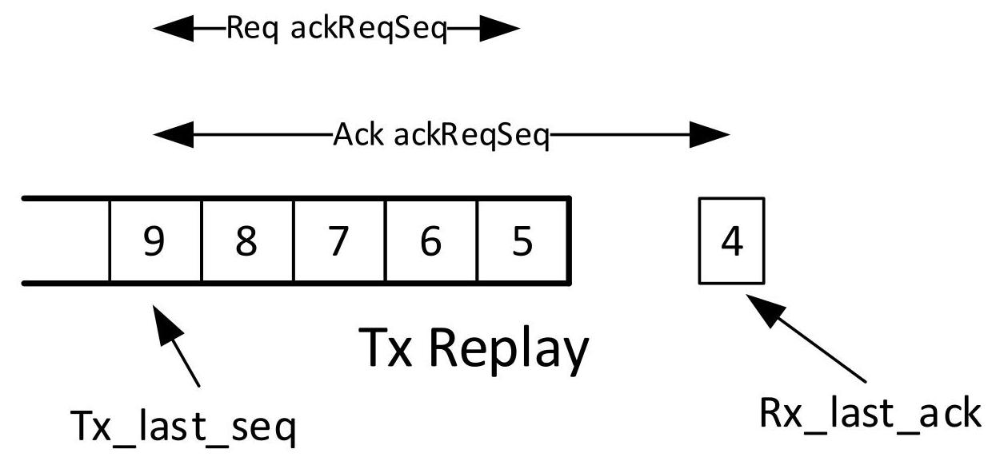
Figure 6-19 Ack Replay Request valid range
图 6-19 确认重放请求有效范围
6.6.6.4 Rx Enqueuing Rules
When an ingress Flit is received that passes CRC Check:
当接收到通过CRC校验的入口Flit时：
- An Explicit Flit with flitSeqNo equal to 0 is dropped and error is logged.
- 带有 flitSeqNo 等于 0 的显式 Flit 将被丢弃并记录错误。
- If at least one of the following are true regarding the received Flit:
- 如果接收到的 Flit 至少满足以下任一条件：
Data Link
数据链路
- It is an Explicit Sequence Number Flit
- 它是一个显式序列号微片
- Rx_ambiguous == 0 and Rx_replay == 0
- Rx_ambiguous == 0 且 Rx_replay == 0
Then
本章规范定义了UALink协议的数据链路层，位于事务层与物理层之间。其主要功能是将64字节的事务层（TL）微片打包成640字节的数据链路（DL）微片进行传输，接收时则进行拆包。数据链路层为链路管理提供了带内消息服务，支持诸如通告TL时钟频率、查询设备与端口ID以及协商通道状态等功能。其中包含一种类似UART的机制用于固件通信，并采用基于信用的流控来防止缓冲区溢出。为支持降低内部时钟频率的节能加速器，定义了发送端调速机制以避免接收端FIFO溢出。
链路可靠性通过重放协议来保证：每个DL净荷微片都携带一个序列号和一个32位CRC。接收端确认正确接收的微片；若发生CRC错误或序列号乱序，则发起重放请求。发送端维护重放缓冲区以重传未确认的微片。微片头部区分显式序列号微片和携带ACK或重放请求的命令微片。通过超时计数器监控前进进度，并通过丢弃损坏微片并将链路转换到安全状态来遏制错误。
数据链路层状态机包含故障、空闲、NOP和运行状态，状态转换由物理层故障、接收到的控制微片或重放超时驱动。总之，数据链路层在提供边带通信和速率适配的同时，确保事务层流量的有序、无损传递，成为UALink互连的可靠传输核心。
- If either of the following are true: # expected sequence number
- 如果以下任一条件为真：# 预期序列号
- Flit is NOP and Rx_seq_calc == Rx_last_seq_calc
- Flit 为 NOP 且 Rx_seq_calc == Rx_last_seq_calc
- Flit is payload and Rx_seq_calc == Rx_last_seq_calc +1
- Flit 为有效载荷且 Rx_seq_calc == Rx_last_seq_calc + 1
Then:
本规范章节定义了 UALink 协议的数据链路层，位于事务层和物理层之间。其主要功能是将 64 字节的事务层（TL）微片打包成 640 字节的数据链路（DL）微片进行发送，并在接收时解包。数据链路层提供带内消息服务用于链路管理，支持诸如通告 TL 时钟频率、查询设备和端口 ID、协商通道状态等功能。包含一个 UART 式机制用于固件通信，并采用基于信用的流量控制以避免缓冲区溢出。为支持降低内部时钟的节能加速器，定义了发送端节流（transmitter pacing）以避免接收端 FIFO 溢出。
链路可靠性通过重放协议保证：每个 DL 有效载荷微片携带一个序列号和一个 32 位 CRC。接收端确认正确接收的微片；若发生 CRC 错误或序列号乱序，则发出重放请求。发送端维护一个重放缓冲区以重传未确认的微片。微片头部区分携带显式序列号的微片和携带 ACK 或重放请求的命令微片。通过超时计数器监控前向进度，并通过丢弃损坏的微片并将链路转换到安全状态来控制错误。
DL 链路状态机包括 Fault、Idle、NOP 和 Up 状态，状态转换由物理层故障、接收到的控制微片或重放超时驱动。总体而言，数据链路层确保 TL 流量的有序、无损交付，同时提供边带通信和速率适配，构成了 UALink 互连的可靠传输核心。
- if payload Flit: add Flit to receive queue
- 如果是有效载荷微片：将该微片添加到接收队列
- Clear Rx_unexpected_count to 0
将 Rx_unexpected_count 清零
- Rx_last_seq_calc = Rx_seq_calc
- Rx_last_seq_calc = Rx_seq_calc
- Clear Rx_replay to 0
- 将 Rx_replay 清零
- Clear Rx_ambiguous to 0
- 将 Rx_ambiguous 清零
- Clear Rx_bad_crc_count to 0
将 Rx_bad_crc_count 清为 0
Else if Rx_replay == 0 then: # unexpected sequence number and not in Replay
否则如果 Rx_replay == 0 则：# 意外的序列号且未处于重放状态
- Set Tx_replay_req_count to 3
- 将 Tx_replay_req_count 设置为 3
- Set Rx_replay to 1
- 将 Rx_replay 设为 1
- Clear Rx_unexpected_count to 0
- 将 Rx_unexpected_count 清零为 0
Else If Rx_replay == 1 then:
否则如果 Rx_replay == 1，则：
- Rx_unexpected_count += 1
- Rx_unexpected_count += 1
- If Rx_unexpected_count >= Rx_replay_limit
- 如果 Rx_unexpected_count >= Rx_replay_limit
- Set Tx_replay_req_count to 3
- 将 Tx_replay_req_count 设置为 3
- Clear Rx_bad_crc_count to 0
- 将 Rx_bad_crc_count 清零
6.6.6.5 Tx Enqueue Rules
All the following shall be true, for TxReplay to accept a Flit:
为了使 TxReplay 接受一个 Flit，须满足以下所有条件：
- Tx_replay == 0
- Tx_replay == 0
- TxReplay buffer is not full
- TxReplay缓冲区未满
- There are no more than 255 unacknowledged Flits in TxReplay
- TxReplay 中未确认的 Flit 数量不超过 255 个
When the TxReplay is accepting Flits, the DL shall provide Flits back-to-back. Flits can be either payload or NOP.
当 TxReplay 正在接受 Flit 时，数据链路层应背靠背地提供 Flit。这些 Flit 可以是有效载荷或 NOP。
6.6.6.6 Tx Source Flit Rules
At every Flit interval a Flit shall be transmitted, assuming it is in the appropriate DL Link States. Flits are be sourced from the TxReplay buffer, during a Standard Replay. Flits are sourced from the normal data flow when not in a Standard Replay. The following describe the rules:
在每个Flit间隔中，只要处于适当的DL链路状态，就应发送一个Flit。在进行标准重放期间，Flit源于TxReplay缓冲区。当不处于标准重放时，Flit则源于正常数据流。相关规则描述如下：
- If Tx_replay == 1 and there are Flits that are scheduled for replay, then:
- 如果 Tx_replay == 1 且存在已调度等待重放的 Flit，则：
- Send the next Replay Flit
- 发送下一个重放 Flit
- If all Flits are sent:
- 如果所有Flits均已发送：
- Set Tx_replay to 0
- 将 Tx_replay 设置为 0
- Else: # Tx_replay == 0
- 否则: # Tx_replay == 0
- Send the Flit from the DL stream. If the Flit is a payload, then the Flit is added to TxReplay
- 从 DL 流发送 Flit。若该 Flit 为有效载荷，则将其添加至 TxReplay
6.6.6.7 Tx Scheduling
The scheduler decides what type of Flit to send. The rules for this are described below.
调度器决定发送哪种类型的微片。具体规则如下所述。
Data Link
数据链路
- Update Tx_explicit_count -= 1
- 更新 Tx_explicit_count，使其减 1
- If Tx_first_replay == 1 then:
- 如果 Tx_first_replay == 1 则：
- Clear Tx_first_replay to 0
- 将 Tx_first_replay 清零
- Set Tx_explicit_count to 0x7
- 将 Tx_explicit_count 设置为 0x7
- Set op to Replay (0b001)
- 将 op 设置为 Replay (0b001)
- Else if Tx_explicit_count <= 0 then:
- 否则如果 Tx_explicit_count <= 0，则：
- Set Tx_explicit_count to 0x7
- 将 Tx_explicit_count 设置为 0x7
- If Tx_replay == 1 then:
- 如果 Tx_replay == 1，则：
- Set op to Replay (0b001)
- 将 op 设置为 Replay (0b001)
- Else:
本章规范定义了UALink协议的数据链路层，它位于事务层与物理层之间。其主要功能是将64字节的事务层（TL）微片打包为640字节的数据链路（DL）微片进行发送，并在接收时解包。数据链路层提供带内消息服务用于链路管理，支持通告TL时钟频率、查询设备和端口ID、协商通道状态等功能。其中包含一种类似UART的机制，用于固件通信，并采用基于信用的流量控制以防止缓冲区溢出。为支持降低内部时钟的节能加速器，定义了发送端 pacing 机制以避免接收方FIFO溢出。
链路的可靠性通过重放协议保障：每个DL有效载荷微片携带一个序列号和一个32位CRC。接收方对正确接收的微片进行确认；若发生CRC错误或序列号乱序，则发起重放请求。发送方维护一个重放缓冲区，用于重传未确认的微片。微片头部区分显式序列号微片和携带ACK或重放请求的命令微片。使用超时计数器监控前向进度，并通过丢弃损坏的微片并将链路转换到安全状态来遏制错误。
DL链路状态机包括故障、空闲、NOP和正常工作状态，其转换由物理层故障、接收到的控制微片或重放超时驱动。总体而言，数据链路层在提供旁带通信和速率适配的同时，保证了TL流量的有序、无损交付，构成了UALink互联的可靠传输核心。
- Set op to Original (0b000)
- 将操作码设为 Original (0b000)
Else if Tx_replay_req_count > 0 and this is a new codeword group since last Replay Request was sent then:
否则如果 Tx_replay_req_count > 0 并且这是自上次重放请求发送以来的新码字组，则：
- If Tx_replay_req_count == 3 then:
- 若 Tx_replay_req_count == 3，则：
- Set Tx_replay_req_seq_no to Rx_last_seq_calc + 1
- 将 Tx_replay_req_seq_no 设置为 Rx_last_seq_calc + 1
- Tx_replay_req_count -= 1
- Tx_replay_req_count -= 1
- Set op to Replay Request (0b011)
- 将 op 设置为重放请求（0b011）
- Set ackReqSeq to Tx_replay_req_seq_no
- 将 ackReqSeq 设置为 Tx_replay_req_seq_no
- Else:
Else:
Set op to Ack (0b010)
将 op 设置为 Ack（0b010）
Set ackReqSeq to Rx_last_seq_calc
将 ackReqSeq 设置为 Rx_last_seq_calc
6.6.6.8 Tx Forward progress
The Tx_ack_counter is decremented when there are unacknowledged Flits in the Tx Replay buffer, saturating at 0x0. The Tx_ack_counter is rearmed to Tx_ack_time_out when an Ack is received that removes Flits from the Tx Replay buffer. If the Tx_ack_counter reaches 0 then the DL enters the DL Idle state.
当发送重放缓冲区中存在未确认的微片时，
Tx_ack_counter递减，饱和于0x0。当收到一个确认并将微片从发送重放缓冲区移除时，Tx_ack_counter被重置为Tx_ack_time_out。若Tx_ack_counter减至 0，则数据链路层进入 DL 空闲状态。
6.6.6.9 Rx Flow Chart
The Rx Flow chart is shown below. Implicit in section 6.6.6.4 is that Flits are dropped unless they are explicitly enqueued. This diagram shows the explicit Flit drop and optional error counters being incremented.
Rx 流程图如下所示。第 6.6.6.4 节中隐含的含义是，微片（Flit）除非被显式入队，否则将被丢弃。该图展示了显式的微片丢弃以及可选错误计数器的递增。
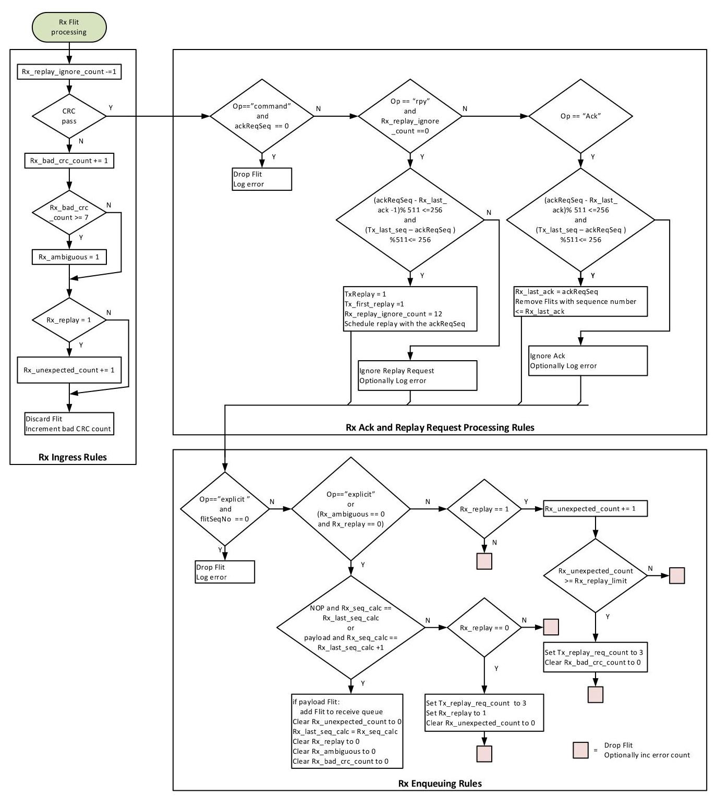
Figure 6-20 Rx Flow Chart
图6-20 接收流程图
Ultra Accelerator Link Consortium Inc. (UALink) - UALink_200 Rev 1.0 Specification
超加速器链接联盟有限公司 (UALink) - UALink_200 Rev 1.0 规范
本章节定义了UALink协议的数据链路层，它位于事务层与物理层之间。其主要功能是将64字节的事务层（TL）微片打包为640字节的数据链路（DL）微片进行传输，并在接收时将其解包。DL提供带内消息服务用于链路管理，可实现通告TL时钟速率、查询设备与端口ID以及协商通道状态等功能。其中包含一个类UART机制用于固件通信，并采用基于信用的流量控制以防止缓冲区溢出。为支持降低内部时钟频率的节能型加速器，定义了发送端调速机制以避免接收端FIFO溢出。
链路可靠性通过重放协议保证：每个DL有效载荷微片均携带一个序列号和一个32位CRC。接收端对正确接收的微片进行确认；若出现CRC错误或序列号失序，则发出重放请求。发送端维护重放缓冲区以重传未确认的微片。微片头部区分显式序列号微片和携带ACK或重放请求的命令微片。前向进展通过超时计数器监控，并通过丢弃损坏的微片并将链路转换至安全状态来遏制错误。
DL链路状态机包含故障（Fault）、空闲（Idle）、NOP和运行（Up）状态，其状态转换由物理层故障、接收到的控制微片或重放超时驱动。总体而言，数据链路层在提供边带通信和速率适配的同时，确保事务层流量的有序、无损传递，构成了UALink互连的可靠传输核心。
6.6.6.10 Tx Flow Chart
The Tx Flow chart is shown Below.
Tx 流程图如下所示。
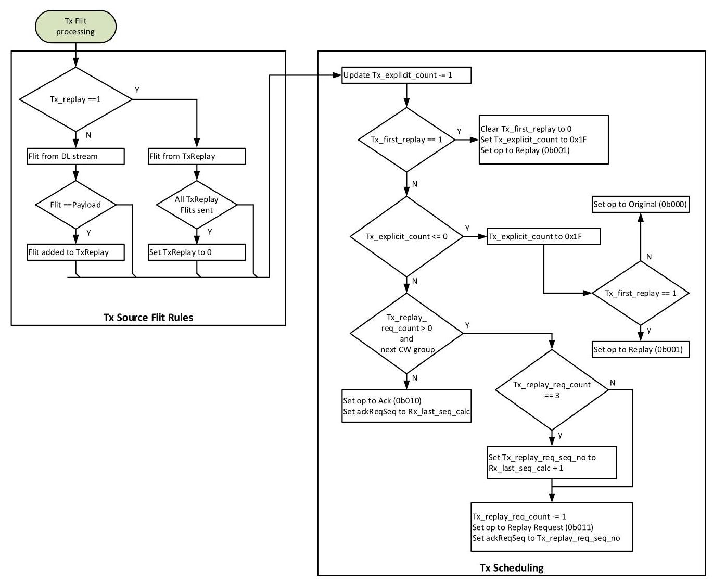
Figure 6-21 Tx Flow Chart
图 6-21 Tx 流程图
6.6.7 Round Trip Time
The TxReplay buffer should be sized to cover the round-trip time of the Link, to prevent stalling the transmit pipeline. Once the TxReplay buffer is full the DL will stop accepting data from the TL, and NOP DL Flits will be sent.
TxReplay 缓冲器的大小应足以覆盖链路的往返时间，以防止传输流水线停滞。一旦 TxReplay 缓冲器满，DL 将停止从 TL 接受数据，并发送 NOP DL 微片。
The diagram in Figure 6-22 depicts the elements of round-trip time.
图6-22中的示意图描述了往返时间的组成要素。
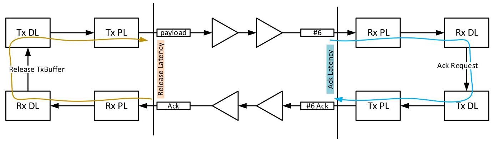
Figure 6-22 Round Trip Time
图6-22 往返时间
Ack Latency: This is the time from the first bit of an Explicit Sequence Number Flit received to the first bit of the Ack Flit, for the indicated sequence number, transmitted. This shall include any worst-case scheduling delay see section 6.6.6.7. Measured at the package pins.
应答延迟：这是从接收到的显式序列号微片的第一个比特到针对该序列号发送的应答微片的第一个比特的时间。该时间应包括任何最坏情况调度延迟（参见第6.6.6.7节）。在封装引脚处测量。
Release Latency: This is the time from the first bit of an Ack Flit received to the first bit of the Payload Flit transmitted, when the TxReplay buffer is in a stalled state due to lack of Ack Flits. Measured at the package pins.
释放延迟：这是当TxReplay缓冲区因缺少Ack Flit而处于停滞状态时，从接收到的Ack Flit的第一个比特到发送的载荷Flit的第一个比特的时间。在封装引脚处测量。
Channel Latency: This is the propagation time through the channel. This could include up to two Retimers and includes cable and other interconnect delays.
通道延迟：这是信号通过通道的传播时间。此延迟可能包含多达两个重定时器，并包括电缆和其他互连延迟。
The RRT is equal to the sum of the Ack Latency + Release Latency + 2x channel latency.
RRT 等于确认延迟 + 释放延迟 + 2 倍通道延迟之和。
Device vendors should publish their Ack Latency and Release Latency on the data sheets, as well Retimer Vendors should publish their latency on the data sheets.
设备供应商应在其数据手册上公布确认延迟和释放延迟，重定时器供应商同样应在其数据手册上公布其延迟。
For example, a RTT = 1,000ns for 200GBASE-KR1/CR1 would equal 25,000 bytes, or 40 Flits, rounded up.
例如，对于200GBASE-KR1/CR1，RTT = 1,000ns 相当于 25,000 字节，即向上取整后为 40 个微片。
6.7 Link State and Errors
6.7.1 DL Link States
The DL link state diagram is shown below.
DL链路状态图如下所示。
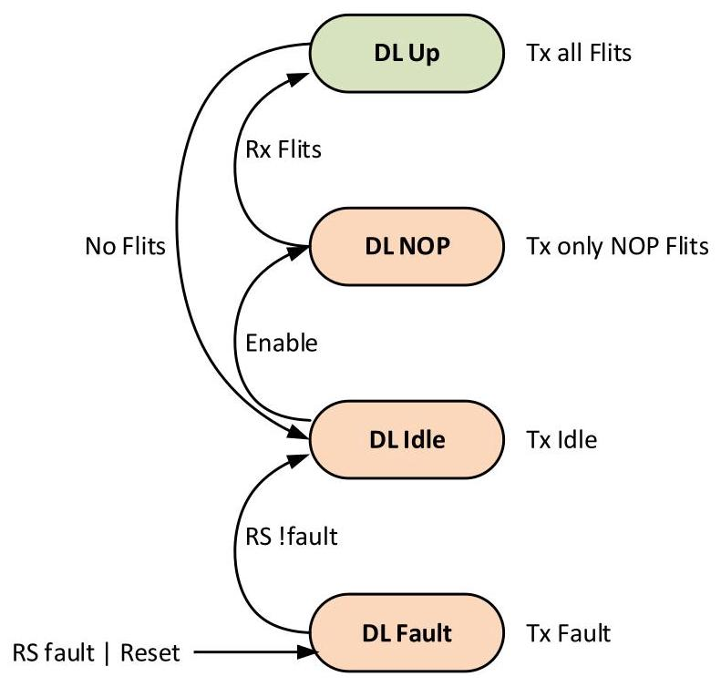
Figure 6-23 DL Link State
图 6-23 DL 链路状态
The DL has the flowing states:
DL 具有以下状态：
6.7.1.1 DL Fault
The transmitter shall send Idle if receiving remote fault or send remote fault if a local fault is detected, in accordance with the Link Fault Signaling state machine in the RS. DL Fault is the reset state and can be entered from any state if a local or remote fault is indicated via the Link Fault Signaling state machine in the RS. The DL is link down in this state.
根据RS中的链路故障信号状态机，发送器在接收到远端故障时应发送空闲，若检测到本地故障则应发送远端故障。DL故障为复位状态，若通过RS中的链路故障信号状态机指示了本地或远端故障，则可从任意状态进入该状态。在此状态下，DL链路断开。
- The next state is DL Idle if the RS is not indicating any fault condition. The RS indicates fault condition when receiving local or remote faults from the PCS.
- 如果 RS 未指示任何故障条件，则下一状态为 DL 空闲。当 RS 从 PCS 接收到本地或远程故障时，它会指示故障条件。
6.7.1.2 DL Idle
The transmitter shall send Idle. The DL is link down in this state.
发送器应发送空闲。在此状态下，DL链路断开。
- The next state is DL Fault if RS indicates a fault.
如果 RS 指示故障，则下一状态为 DL Fault。
- The next state is DL NOP if enabled via a higher layer.
- 如果通过更高层启用了DL NOP，则下一个状态为DL NOP。
6.7.1.3 DL NOP
The transmitter will send only NOP DL Flits. The RS will inject codewords containing alignment markers or all Idle into the data stream as required. The replay state machine shall not expect ACKs in this state, the link partner may only be transmitting Idle. The DL is link down in this state.
发送器将仅发送 NOP DL 微片。RS 将根据需要向数据流中注入包含对齐标记或全空闲的码字。重放状态机在此状态下不应期待 ACK，链路伙伴可能仅在发送空闲。在此状态下 DL 处于链路断开状态。
- The next state is DL Fault if RS indicates a fault.
- 如果 RS 指示故障，则下一状态为 DL Fault。
- The next state is DL Up if ten NOP DL Flits have been sent and two consecutive DL flits are received, the received DL Flits may be NOP Flits or payload Flits.
- 若已发送十个 NOP DL 微片且连续收到两个 DL 微片，则下一状态为 DL Up；所接收的 DL 微片可以是 NOP 微片或有效载荷微片。
6.7.1.4 DL Up
The transmitter will send only NOP DL Flits or payload DL Flits. The RS will inject codewords containing alignment markers or all Idle into the data stream as required. The DL is link up in this state.
发送端将仅发送 NOP DL Flit 或有效负载 DL Flit。RS 编码器会根据需要向数据流中插入包含对齐标记或全空闲码字的码字。在此状态下，DL 链路已建立。
- The next state is DL Fault if RS indicates a fault.
- 如果 RS 指示故障，则下一状态为 DL Fault。
- The next state is DL Idle if four consecutive control Flits are received by the RS.
- 若 RS 连续接收到四个控制微片，则下一状态为 DL 空闲态。
- The next state is DL Idle if directed from an error containment event, see 6.7.4.
- 若由错误包容事件指示，下一状态为 DL Idle，见 6.7.4。
- The next state is DL Idle if directed from a time out event, see 6.6.6.8.
- 如果来自超时事件，则下一状态为 DL Idle，参见 6.6.6.8。
Note: four consecutive control Flits received by the RS, indicates that the link partner has moved to a link down state.
注意：接收端连续收到四个控制微片，表明链路对端已进入链路断开状态。
6.7.2 Correctable Errors
Correctable errors are bit errors that may occur in the layers below the DL Replay function. These bit errors are either corrected by the PCS FEC or fail CRC and are replayed. FEC correction statistics are provided in the PCS FEC logic. CRC error counts, and replay counts are provided in the replay logic.
可纠正错误是指可能发生在 DL 重放功能以下层的比特错误。这些比特错误要么由 PCS FEC 纠正，要么 CRC 未通过后被重放。FEC 纠正统计信息在 PCS FEC 逻辑中提供。CRC 错误计数和重放计数在重放逻辑中提供。
6.7.3 Uncorrectable Errors
Uncorrectable errors may occur at layers above the DL replay function. These data and control paths shall have appropriate parity protection to detect soft or hard errors.
在 DL 重放功能之上的各层可能会出现不可纠正的错误。这些数据路径和控制路径应具有适当的奇偶校验保护，以检测软错误或硬错误。
6.7.4 Error Containment
The goal of error containment is to prevent propagation of data that is known to have errors.
错误隔离的目标是防止已知存在错误的数据的传播。
6.7.4.1 RS and PCS
Error containment below the DL replay, i.e., RS and PCS is covered by FEC and CRC replay. Only data that passes FEC correction and DL CRC check is forwarded to the TL.
DL重放以下的错误遏制，即RS和PCS，由FEC和CRC重放来覆盖。只有通过FEC校正和DL CRC校验的数据才会转发给TL。
6.7.4.2 Data Link
Ingress Direction: After unpacking, the DL transfers TL Flits to the TL. If any TL Flits are determined to be in error, via parity error or other means, they are flagged as errored to the TL or dropped before transfer to the TL. Subsequent TL Flits are dropped.
入口方向：解包后，DL 将 TL 微片传输到 TL。若通过奇偶校验或其他方式确定任何 TL 微片存在错误，则将其标记为错误传递给 TL，或在传递给 TL 之前将其丢弃。后续的 TL 微片将被丢弃。
Ultra Accelerator Link Consortium Inc. (UALink) - UALink_200 Rev 1.0 Specification
Egress Direction: When the TL indicates an errored TL, or a parity error is detected during packing, the CRC for the DL Flit is inverted. This guarantees the DL Flit will fail CRC check at the link partner. Subsequent DL Flits are not sent to the RS, including NOP Flits.
出口方向：当TL指示一个出错的TL，或在打包过程中检测到奇偶校验错误时，DL Flit的CRC被反转。这保证了DL Flit将在链路伙伴处无法通过CRC校验。后续的DL Flit（包括NOP Flit）不会发送到RS。
In both cases above the DL goes link down, via a state transition to DL Idle.
在上述两种情况下，DL 通过状态转换至 DL Idle 而使链路断开。
Evaluation Copy
本规范章节定义了UALink协议的数据链路层，位于事务层与物理层之间。其主要功能是将64字节的事务层（TL）微片打包为640字节的数据链路（DL）微片进行发送，并在接收时解包。数据链路层提供了带内消息服务用于链路管理，可实现诸如通告TL时钟速率、查询设备和端口ID以及协商通道状态等功能。其中包含一个类似UART的机制用于固件通信，并采用基于信用的流量控制以防止缓冲区溢出。为支持降低内部时钟的节能加速器，定义了发送器调速以避免接收器FIFO溢出。
链路可靠性通过重传协议保证：每个DL有效载荷微片都携带序列号和32位CRC。接收器对正确接收的微片进行确认；若发生CRC错误或序列号乱序，则发出重传请求。发送器维护重传缓冲区以重新发送未确认的微片。微片头部可区分显式序列号微片和携带ACK或重传请求的命令微片。通过超时计数器监控前向进度，通过丢弃损坏的微片并将链路转换到安全状态来遏制错误。
数据链路层状态机包括故障、空闲、NOP和就绪状态，其转换由物理层故障、接收到的控制微片或重传超时驱动。总体而言，数据链路层在提供边带通信和速率适配的同时，确保了TL流量的有序、无损传递，构成了UALink互联的可靠传输核心。